EducațieEducație de bază
Învață cum funcționează piața, cine formează lichiditatea și cum gestionezi riscul.
Bazele Pieței Forex — Lecția 1
Înainte de orice tranzacție, un trader trebuie să înțeleagă mecanismele de bază ale pieței Forex — de la perechi valutare până la efectul de levier și managementul volumului.
1. Ce este Forex?
Foreign Exchange — piața globală a valutelor
- Forex reprezintă schimbul unei monede în alta — pe această piață se tranzacționează perechi precum EUR/USD, GBP/USD sau USD/JPY.
- Nu există o bursă centrală. Tranzacțiile circulă printr-o rețea globală: bănci, fonduri de investiții, companii, brokeri, bănci centrale și traderi individuali.
- Fiind descentralizată, piața Forex este deschisă aproape non-stop, 5 zile pe săptămână, cu lichiditate diferită în funcție de sesiune.
Exemple: EUR/USD · GBP/USD · USD/JPY — cele mai tranzacționate perechi valutare
Impact: Înțelegerea structurii pieței te ajută să știi cine mișcă prețul și de ce lichiditatea variază pe parcursul zilei.
2. Perechea Valutară
O monedă comparată cu alta
- La EUR/USD = 1,1500, un euro valorează 1,15 dolari americani. EUR este moneda de bază, USD este moneda cotată.
- Perechi majore (conțin USD, lichiditate ridicată): EUR/USD, GBP/USD, USD/JPY, USD/CHF, AUD/USD, USD/CAD, NZD/USD.
- Perechi minore (fără USD): EUR/GBP, EUR/JPY, GBP/JPY. Perechi exotice: combină o monedă majoră cu una a unei economii mai mici — spread și volatilitate de obicei mai mari.
Exemple: Dacă EUR/USD crește, euro se întărește față de dolar; dacă scade, euro slăbește
Impact: Tipul perechii (majoră, minoră, exotică) influențează direct spread-ul și costul fiecărei tranzacții.
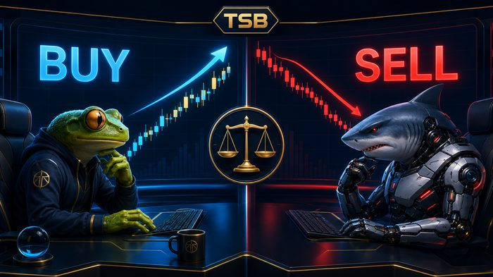
3. BUY și SELL
Direcția tranzacției
- Deschizi BUY când analiza indică faptul că moneda de bază se poate aprecia față de moneda cotată — la BUY EUR/USD anticipezi că EUR se va întări față de USD.
- Deschizi SELL când analiza indică o depreciere a monedei de bază — la SELL EUR/USD anticipezi că EUR va slăbi față de USD.
- Nu e suficient să presupui direcția. Înaintea intrării trebuie stabilite: motivul intrării, nivelul de invalidare, Stop Loss, Take Profit, volumul și riscul maxim acceptat.
Exemple: BUY = anticipezi creștere · SELL = anticipezi scădere a monedei de bază
Impact: Un plan clar de intrare/ieșire, stabilit înainte de tranzacție, elimină deciziile emoționale luate în timp real.
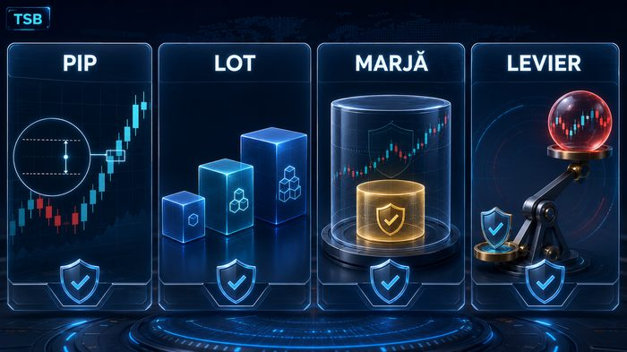
4. Ce este Lotul?
Volumul poziției tale
- Lot standard (1,00) = 100.000 unități din moneda de bază · Mini lot (0,10) = 10.000 · Micro lot (0,01) = 1.000.
- Un lot mai mare produce o variație mai mare a profitului sau pierderii pentru aceeași mișcare a prețului.
- Volumul nu se alege după profitul dorit — se calculează în funcție de soldul contului, riscul procentual, distanța până la Stop Loss, valoarea pipului și moneda contului.
Exemple: 1,00 lot standard = 100.000 · 0,10 mini lot = 10.000 · 0,01 micro lot = 1.000 unități
Impact: Volumul corect, calculat pe baza riscului, este ce separă un plan de trading disciplinat de un pariu.
Alte concepte esențiale
Bid, Ask și Spread
Bid este prețul la care poți vinde, Ask prețul la care poți cumpăra, iar Spread-ul este diferența dintre ele (ex: Bid 1,1500 / Ask 1,1502 = spread de 2 pipși). Spread-ul e un cost de tranzacție și poate crește în perioadele cu lichiditate redusă sau la știri importante.
Ce este un Pip?
Pip-ul este unitatea de măsură a mișcării prețului — pentru majoritatea perechilor, 1 pip = 0,0001 (pentru perechile cu JPY, de obicei 0,01). La XAU/USD, termenii pip/point/tick pot diferi între brokeri — verifică mereu specificațiile simbolului în MT5.
Ce este Marja?
Marja este suma blocată de broker pentru menținerea unei poziții cu efect de levier. Nu reprezintă pierderea maximă — pierderea reală depinde de volum, mișcarea prețului, Stop Loss, spread, comisioane și eventualul slippage.
Ce este Efectul de Levier?
Levierul permite controlarea unei poziții mai mari cu o sumă mai mică din cont (ex: la 1:30, fiecare unitate de marjă poate controla o expunere de până la 30). Levierul amplifică atât profitul, cât și pierderea — CFTC avertizează că levierul ridicat poate amplifica rapid pierderile, iar FCA clasifică CFD-urile drept produse cu risc ridicat.
Ce Influențează Cursurile Valutare?
Prețul unei monede poate fi influențat de ratele dobânzilor, inflație, date privind locurile de muncă, creșterea economică, declarațiile băncilor centrale, riscul geopolitic, cererea și oferta și sentimentul investitorilor — de aceea calendarul economic trebuie verificat înaintea oricărei tranzacții.
Checklist pentru începători
- ☐ Înțeleg perechea tranzacționată?
- ☐ Știu care este moneda de bază?
- ☐ Am un motiv clar pentru BUY sau SELL?
- ☐ Am verificat spread-ul?
- ☐ Am verificat calendarul economic?
- ☐ Am stabilit Stop Loss-ul?
- ☐ Am calculat volumul?
- ☐ Riscul nu depășește regula planului meu?
- ☐ Accept pierderea posibilă înainte de intrare?
Mini-test
- Care este moneda de bază în GBP/USD?
- Ce anticipezi când deschizi BUY EUR/USD?
- Care este diferența dintre Bid și Ask?
- Ce se întâmplă cu riscul atunci când mărești lotul?
- Levierul amplifică doar profitul sau și pierderea?
Răspunsuri: GBP · aprecierea EUR față de USD · Bid e prețul de vânzare, Ask e prețul de cumpărare · riscul crește · amplifică atât profitul, cât și pierderea.
Informațiile din această lecție au scop educativ și nu constituie sfat financiar. Trading implică risc, inclusiv pierderea parțială sau totală a capitalului investit. Primul obiectiv nu este câștigul rapid, ci înțelegerea mecanismului și protejarea capitalului.
Utilizarea Terminalului MT4 și MT5 — Lecția 2
Terminalul de tranzacționare este locul unde iei toate deciziile — cunoașterea interfeței, a tipurilor de ordine și a instrumentelor de analiză este esențială înainte de a deschide prima poziție reală.
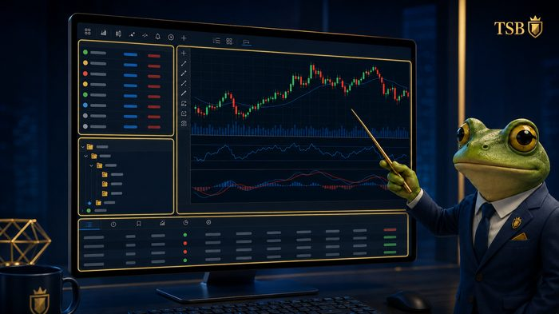
1. Interfața Terminalului
Orientare rapidă în MT4/MT5
- Fereastra Market Watch afișează simbolurile disponibile, cu prețurile Bid/Ask actualizate în timp real — de aici alegi perechea pe care o analizezi.
- Fereastra Navigator conține conturile, indicatorii, expert advisorii și scripturile disponibile, iar fereastra Terminal (jos) arată tranzacțiile deschise, istoricul și jurnalul (Journal).
- Zona centrală este graficul activ — poți deschide mai multe grafice simultan, fiecare cu propriul timeframe și set de indicatori.
Exemple: Market Watch · Navigator · Terminal (Trade/Journal) · fereastra grafic
Impact: O interfață bine organizată reduce timpul de reacție și greșelile de click în momentele cu volatilitate ridicată.
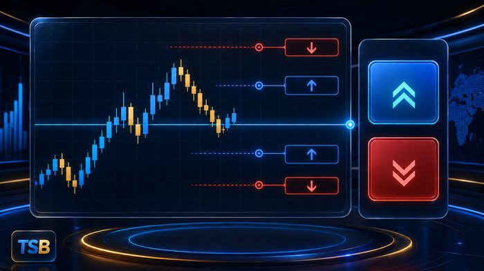
2. Tipurile de Ordine
Cum intri și ieși dintr-o tranzacție
- Ordinul de piață (Market Order) execută imediat, la prețul curent Bid sau Ask — folosit când vrei să intri instant în piață.
- Ordinele pending (Buy Limit, Sell Limit, Buy Stop, Sell Stop) execută automat doar dacă prețul ajunge la un nivel stabilit de tine, fără să stai la ecran.
- Stop Loss și Take Profit se atașează ordinului pentru a limita automat pierderea sau a proteja profitul, fără intervenție manuală ulterioară.
Exemple: Buy Limit sub prețul curent · Sell Stop sub prețul curent · Buy Stop deasupra prețului curent
Impact: Ordinele pending îți permit să tranzacționezi un plan stabilit dinainte, fără să fii dependent de a urmări piața non-stop.
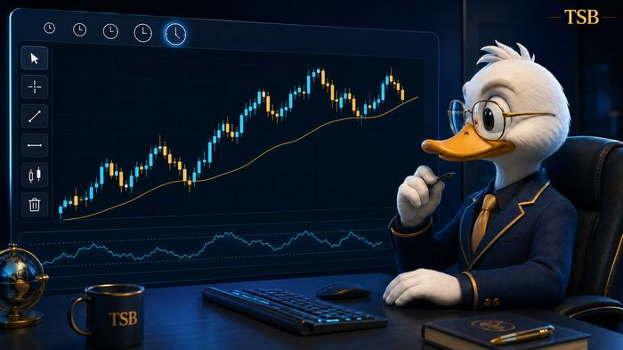
3. Analiza Graficului
Instrumentele tehnice din terminal
- Timeframe-urile (M1 până la MN) schimbă perspectiva — un timeframe mai mare arată tendința generală, unul mai mic arată detalii de intrare.
- Instrumentele de desen (linii de trend, suport/rezistență, Fibonacci) și indicatorii (medii mobile, RSI, MACD) se adaugă direct pe grafic din meniul Insert.
- Poți salva un set de indicatori ca șablon (template) și îl aplici rapid pe orice alt grafic, păstrând consecvența analizei.
Exemple: M15 pentru intrare · H4/D1 pentru tendința generală · șabloane salvate pentru consecvență
Impact: Analiza pe mai multe timeframe-uri (multi-timeframe) reduce riscul de a intra împotriva tendinței principale.
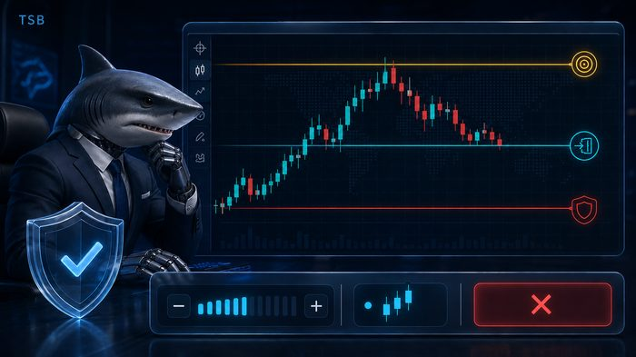
4. Administrarea Poziției
Ce faci după ce ai intrat în piață
- Poți modifica Stop Loss și Take Profit oricând din fereastra Terminal, fără să închizi și să redeschizi poziția.
- Închiderea parțială îți permite să asiguri o parte din profit, lăsând restul poziției deschisă cu un SL mutat la breakeven.
- Trailing Stop mută automat Stop Loss-ul pe măsură ce prețul avansează în favoarea ta, protejând profitul acumulat fără intervenție manuală constantă.
Exemple: Mutare SL la breakeven după +20 pips · închidere parțială 50% la prima țintă
Impact: O administrare activă a poziției transformă un semnal bun într-un rezultat consistent — intrarea e doar începutul, nu tot planul.
Alte funcții utile ale terminalului
Strategy Tester
Permite testarea unui Expert Advisor sau a unei strategii pe date istorice, înainte de a o folosi pe cont real — util pentru verificarea rapidă a unei idei, fără a risca bani reali.
Alertele de Preț
Poți seta o alertă sonoră sau vizuală atunci când prețul atinge un nivel specific, fără să fii nevoit să urmărești constant graficul.
One-Click Trading
Activează un buton rapid de BUY/SELL direct pe grafic — util pentru execuție rapidă, dar crește riscul de erori dacă nu ești atent la volum.
Depth of Market (DOM)
Disponibil pe unele conturi MT5, arată nivelurile de lichiditate din cartea de ordine — util pentru traderii care analizează structura pieței în timp real.
Cont Demo vs. Cont Real
Terminalul funcționează identic pe cont demo și cont real — demo-ul e locul ideal pentru a exersa navigarea, ordinele și administrarea poziției înainte de a risca capital real.
Checklist înainte de prima tranzacție live
- ☐ Știu unde se află Market Watch, Navigator și fereastra Terminal?
- ☐ Pot plasa un ordin de piață și unul pending fără să ezit?
- ☐ Știu cum atașez Stop Loss și Take Profit unui ordin?
- ☐ Am exersat modificarea SL/TP pe o poziție deschisă?
- ☐ Știu cum fac o închidere parțială?
- ☐ Am testat platforma pe cont demo cel puțin câteva săptămâni?
- ☐ Știu cum verific istoricul tranzacțiilor în Journal?
- ☐ Am setat corect notificările/alertele de preț?
Mini-test
- Ce diferență este între un ordin de piață și unul pending?
- La ce folosește Trailing Stop-ul?
- De ce este util să analizezi mai multe timeframe-uri înainte de a intra în piață?
- Care este scopul contului demo?
Răspunsuri: ordinul de piață execută imediat, cel pending execută la un nivel stabilit · protejează profitul mutând automat SL-ul · reduce riscul de a intra împotriva tendinței principale · exersarea platformei fără a risca capital real.
Informațiile din această lecție au scop educativ și prezintă funcționalități generale ale platformelor MT4/MT5. Interfața poate varia ușor în funcție de broker și versiune. Trading implică risc, inclusiv pierderea parțială sau totală a capitalului investit.
Analiza Tehnică — Lecția 3
Analiza tehnică studiază mișcarea prețului pentru a identifica direcția, structura și punctele importante ale pieței — nu prezice viitorul cu certitudine, ci ajută traderul să construiască scenarii și să gestioneze probabilitățile.
Ce este analiza tehnică
Analiza tehnică reprezintă studierea mișcării prețului pentru a identifica direcția pieței, structura, zonele importante, volatilitatea, posibile puncte de intrare, nivelul care invalidează analiza și posibile ținte. Ea nu prezice cu certitudine viitorul — ajută traderul să construiască scenarii și să gestioneze probabilitățile.
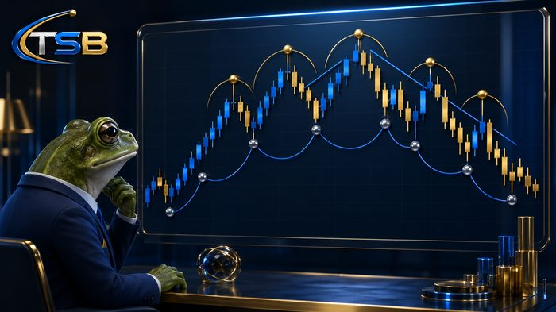
1. Structura Pieței
Punctul de pornire al analizei tehnice
- Un trend ascendent formează maxime din ce în ce mai ridicate și minime din ce în ce mai ridicate — cumpărătorii controlează piața atât timp cât minimele structurale importante sunt protejate.
- Un trend descendent formează maxime din ce în ce mai joase și minime din ce în ce mai joase — vânzătorii controlează piața atât timp cât maximele structurale importante nu sunt depășite.
- În consolidare, prețul se mișcă între două limite fără o direcție clară — intrările în mijlocul intervalului pot avea un raport risc-recompensă mai slab.
Exemple: Maxime + minime din ce în ce mai ridicate = trend ascendent · interval fără direcție clară = consolidare
Impact: Identificarea corectă a structurii este primul pas — restul analizei se construiește pe această bază.
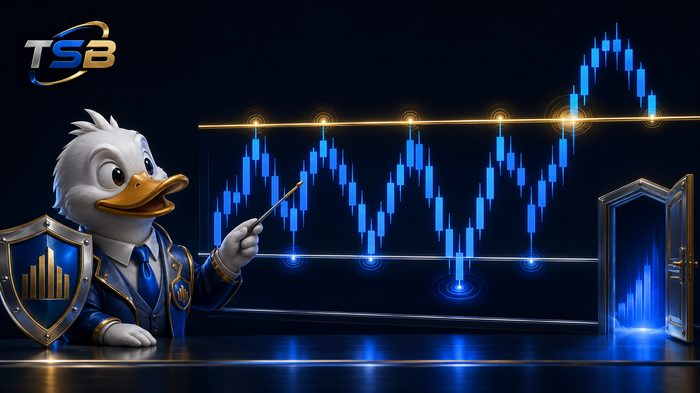
2. Suport și Rezistență
Zonele unde piața a reacționat anterior
- Suportul este o zonă în care cumpărătorii au intervenit anterior și au oprit sau încetinit scăderea; rezistența este o zonă în care vânzătorii au oprit sau încetinit creșterea.
- Un nivel e mai relevant când a produs o reacție puternică, a fost respectat de mai multe ori, e vizibil pe un interval superior și coincide cu structura pieței sau o zonă de lichiditate.
- După o străpungere, rezistența poate deveni suport și invers — confirmarea e mai sigură după închiderea lumânării și, uneori, după retestare.
Exemple: Nivel respectat de 3+ ori · vizibil pe H4/D1 · coincide cu structura
Impact: Aceste zone trebuie privite ca intervale, nu ca linii perfecte — precizia excesivă poate induce în eroare.
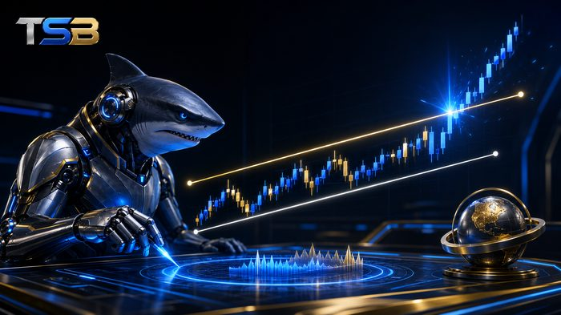
3. Linii de Trend, Canale și Spargerea Lor
Context vizual pentru structură
- Linia de trend ascendentă unește minimele relevante; linia descendentă unește maximele relevante. Un canal conține două limite aproximativ paralele — inferioară ca suport, superioară ca rezistență.
- O străpungere a canalului nu reprezintă automat un semnal — verifică dacă există o închidere clară în afara canalului, nu doar o umbră care depășește limita.
- Caută schimbare de structură, impuls și, dacă e posibil, o retestare a nivelului spart, plus spațiu suficient până la următoarea zonă importantă înainte de a considera semnalul valid.
Exemple: Linie ascendentă = minime conectate · străpungere fiabilă = închidere clară + impuls + retestare
Impact: Tratarea fiecărei străpungeri ca semnal automat e o greșeală frecventă care duce la intrări premature.
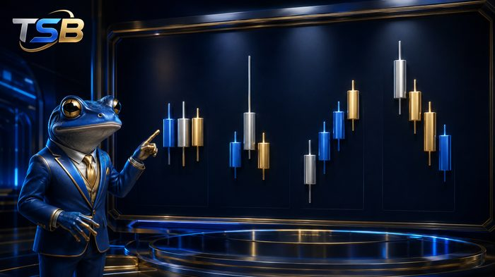
4. Lumânările Japoneze
Patru informații într-o singură formă
- Fiecare lumânare arată prețul de deschidere, maximul, minimul și prețul de închidere. Corpul mare indică de obicei un impuls mai puternic; corpul mic poate indica echilibru sau indecizie.
- O umbră lungă poate semnala respingerea unei zone, dar nu este suficientă singură pentru o intrare.
- Aceeași formațiune poate avea semnificații diferite la suport, la rezistență, în mijlocul unei consolidări sau în/împotriva direcției trendului — nu trebuie analizată izolat de structură.
Exemple: Corp mare = impuls puternic · umbră lungă = posibilă respingere a zonei
Impact: Contextul (structura + zona) contează mai mult decât forma individuală a lumânării.
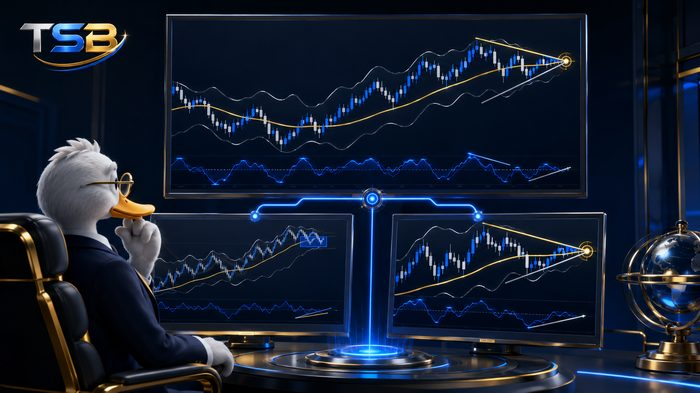
5. Indicatorii Tehnici
Instrumente de confirmare, nu de înlocuire
- Moving Average ajută la observarea direcției și ritmului pieței, dar reacționează cu întârziere și nu stabilește singură momentul intrării.
- ATR măsoară volatilitatea (nu direcția) și ajută la poziționarea Stop Loss-ului și estimarea unei ținte realiste.
- RSI măsoară impulsul — o zonă ridicată nu înseamnă automat SELL, iar una scăzută nu înseamnă automat BUY.
Exemple: Moving Average = direcție · ATR = volatilitate · RSI = impuls
Impact: Indicatorii trebuie folosiți pentru confirmare alături de structură, nu ca înlocuitori ai acesteia.
Concepte avansate
Analiza pe mai multe intervale
O metodă simplă folosește trei niveluri: intervalul superior (D1/H4) stabilește direcția principală și structura; intervalul intermediar (H1/M15) construiește scenariul și observă reacția prețului; intervalul de intrare (M5/M1) confirmă precis și calculează riscul. Intervalul mic nu trebuie să contrazică fără motiv imaginea oferită de intervalul superior.
Confluența
Confluența apare când mai multe elemente independente susțin același scenariu: direcția intervalului superior, suport/rezistență, structură, reacția lumânărilor, volatilitate potrivită, confirmarea indicatorului și un raport risc-recompensă acceptabil. Folosirea mai multor indicatori care calculează aproximativ același lucru nu oferă neapărat o confirmare mai puternică.
Greșeli Frecvente
Cele mai comune greșeli: încărcarea graficului cu prea mulți indicatori, trasarea nivelurilor după fiecare lumânare, intrarea înainte de confirmare, analizarea exclusivă a unui interval mic, confundarea unei umbre cu o străpungere confirmată, mutarea nivelurilor pentru a justifica o poziție, ignorarea știrilor importante, intrarea fără invalidare și Stop Loss, și schimbarea analizei după deschiderea poziției.
Procesul unei Analize TSB, în 10 pași
O structură clară de analiză reduce deciziile impulsive și ajută la construirea unui scenariu coerent înainte de a intra în piață.
1. Trend sau consolidare
2. Maxime/minime structurale
3. Suport și rezistență
4. Interval superior
5. Lichiditate și false străpungeri
6. Reacție sau confirmare
7. Intrare și invalidare
8. Stop Loss și volum
9. Țintă realistă
10. Calendar economic
Checklist de analiză tehnică
- ☐ Structura este clară?
- ☐ Piața are trend sau consolidare?
- ☐ Zonele importante sunt marcate?
- ☐ Am verificat intervalul superior?
- ☐ Intrarea are confirmare?
- ☐ Știu unde analiza devine invalidă?
- ☐ Stop Loss-ul este poziționat logic?
- ☐ Volumul respectă riscul permis?
- ☐ Există spațiu până la țintă?
- ☐ Am verificat știrile economice?
Informațiile din această lecție au scop educativ și prezintă concepte generale de analiză tehnică. Analiza tehnică nu garantează rezultate viitoare și nu elimină riscul. Trading implică risc, inclusiv pierderea parțială sau totală a capitalului investit.
Analiza Fundamentală — Lecția 4
Analiza fundamentală studiază factorii economici, monetari, politici și geopolitici care pot influența valoarea unui activ. Dacă analiza tehnică arată cum se mișcă prețul, analiza fundamentală încearcă să explice de ce se mișcă.
Ce este analiza fundamentală
Analiza fundamentală studiază factorii economici, monetari, politici și geopolitici care pot influența valoarea unui activ — inflația, ratele dobânzilor, piața muncii, creșterea economică, băncile centrale, politica fiscală, prețurile energiei, obligațiunile, riscurile geopolitice și sentimentul general al pieței. Ea nu garantează direcția prețului — piața poate reacționa diferit deoarece participanții compară rezultatul publicat cu ceea ce era deja anticipat.
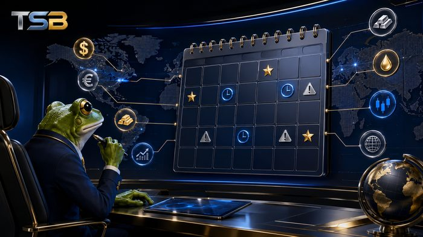
1. Calendarul Economic
Harta evenimentelor care pot mișca piața
- Calendarul economic arată data și ora publicării indicatorilor importanți — înaintea fiecărei sesiuni trebuie verificate țara, ora, nivelul de importanță, valoarea precedentă, prognoza și eventualele revizuiri.
- Cele trei valori de urmărit sunt Precedent (rezultatul anterior), Prognoză (estimarea economiștilor) și Actual (valoarea publicată în momentul evenimentului).
- Piața reacționează frecvent la diferența dintre valoarea actuală și prognoză, nu doar la faptul că rezultatul e pozitiv sau negativ.
Exemple: Precedent · Prognoză · Actual — diferența dintre ele contează mai mult decât semnul rezultatului
Impact: Verificarea calendarului înainte de a deschide o poziție ajută la evitarea surprizelor de volatilitate.
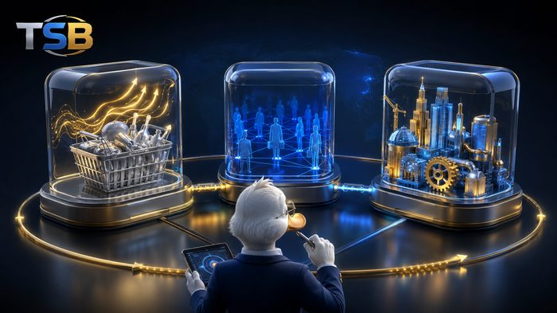
2. Nivelurile de Impact
Nu toate evenimentele mișcă piața la fel
- Impact redus — reacție de regulă limitată, dar poate deveni relevantă într-un context sensibil.
- Impact mediu — poate influența moneda sau sectorul direct legat de raport.
- Impact ridicat — poate genera volatilitate puternică, creșterea spread-ului, slippage, mișcări false și schimbarea rapidă a direcției, inclusiv lichidarea pozițiilor cu levier ridicat.
Exemple: Redus · Mediu · Ridicat — verifică nivelul înainte de fiecare eveniment
Impact: Înaintea unui eveniment important trebuie decis dacă poziția va fi menținută, redusă sau închisă.
3. Inflația
Motorul din spatele deciziilor băncilor centrale
- Inflația reprezintă creșterea generală a prețurilor bunurilor și serviciilor — indicatorii urmăriți includ CPI, inflația de bază, PPI, PCE (SUA), evoluția salariilor și prețurile energiei/serviciilor.
- O inflație peste așteptări poate determina piața să anticipeze dobânzi mai ridicate pentru mai mult timp; una sub așteptări poate încuraja așteptările pentru reducerea dobânzilor.
- Bank of England și BCE urmăresc stabilitatea prețurilor în jurul unei ținte de inflație de 2% pe termen mediu.
Exemple: CPI · inflația de bază · PPI · PCE (SUA)
Impact: Datele de inflație influențează direct anticipațiile privind dobânzile, iar acestea mișcă valutele, aurul și indicii.
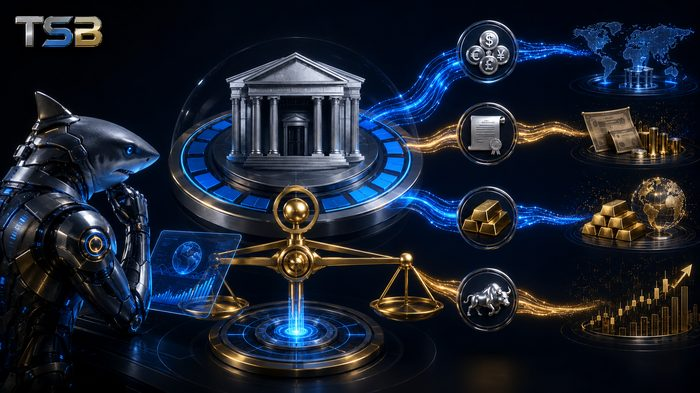
4. Băncile Centrale și Ratele Dobânzilor
Instituțiile care stabilesc costul banilor
- Băncile centrale (Fed, BoE, BCE, BoJ, SNB, BoC, RBA, RBNZ) folosesc dobânda de politică monetară pentru a influența inflația, creditarea, consumul, economisirea, investițiile, cursul monedei și activitatea economică.
- O politică mai restrictivă poate susține moneda; una mai relaxată poate pune presiune pe ea. Dobânzile și randamentele mai ridicate pot exercita presiune asupra aurului, iar așteptările viitoare pot conta mai mult decât decizia curentă.
- Nu trebuie analizată doar decizia — contează și declarația oficială, voturile membrilor, proiecțiile economice, conferința de presă, tonul guvernatorului și modificarea anticipațiilor pentru următoarele ședințe.
Exemple: Fed · BoE · BCE · BoJ · SNB · BoC · RBA · RBNZ
Impact: O singură modificare de formulare în comunicatul băncii centrale poate schimba complet anticipațiile pieței.
5. Rapoartele Fundamentale TSB
Sinteza săptămânală a contextului macroeconomic
- TSB oferă rapoarte săptămânale privind principalele evenimente economice și financiare — inflație, dobânzi, bănci centrale, piața muncii, valute, XAU/USD, indici, energie, obligațiuni, cripto și riscuri geopolitice.
- Fiecare raport include scenarii pentru perioada următoare, construite pe baza contextului macroeconomic curent.
- Rapoartele au scop educativ și informativ și nu reprezintă consultanță financiară sau promisiuni privind rezultatele.
Exemple: Publicare săptămânală · context macro · scenarii posibile
Impact: Un raport citit înaintea sesiunii de tranzacționare ajută la construirea unei imagini de ansamblu asupra săptămânii.
6. Analize și Notificări TSB
Reacție rapidă la evenimentele majore
- Atunci când apare un eveniment major, TSB elaborează o analiză suplimentară care explică ce s-a întâmplat, diferența față de așteptări, de ce a reacționat piața și sectoarele afectate.
- Abonații primesc o notificare prin email la publicarea unui nou raport săptămânal, la o analiză după un eveniment important sau la o actualizare relevantă a unui raport existent.
- Emailul conduce către raportul complet publicat pe site — notificările sunt trimise doar utilizatorilor care și-au exprimat acordul și oferă mereu posibilitatea dezabonării.
Exemple: Notificare email · raport complet pe site · dezabonare oricând
Impact: Analizele rapide după evenimente majore ajută la înțelegerea reacției pieței fără a fi nevoie de research suplimentar.
Ce mai influențează piața
Piața Muncii
Datele privind ocuparea forței de muncă (NFP, rata șomajului, salariul mediu, cererile de șomaj, locurile disponibile, participarea pe piața muncii) indică starea economiei și presiunile asupra salariilor. O piață a muncii foarte puternică poate menține presiunile inflaționiste; o deteriorare pronunțată poate determina banca centrală să adopte o politică mai relaxată. Federal Reserve urmărește două obiective principale: stabilitatea prețurilor și ocuparea maximă a forței de muncă.
Produsul Intern Brut
PIB-ul măsoară valoarea bunurilor și serviciilor produse într-o economie. Trebuie analizate ritmul trimestrial și anual, PIB-ul real, contribuția serviciilor, producția industrială, consumul, investițiile și revizuirile datelor. O economie în creștere poate susține moneda, dar efectul depinde de inflație, dobânzi și anticipațiile pieței.
Forex
Piața valutară este influențată de diferențele dintre politicile monetare, inflație, creștere economică și fluxurile internaționale de capital ale țărilor implicate în fiecare pereche valutară.
Aur și Metale
XAU/USD este sensibil la dolarul american, randamentele obligațiunilor, dobânzile reale, inflație, cererea de refugiu, tensiunile geopolitice și achizițiile băncilor centrale.
Indici Bursieri
Indicii sunt influențați de dobânzi, profitabilitatea companiilor, creșterea economică, sectorul tehnologic, energie, sectorul financiar și sentimentul general al investitorilor.
Energie
Petrolul și gazele sunt influențate de oferta și cererea globală, deciziile OPEC+, nivelul stocurilor, conflicte, sancțiuni, transport și condițiile meteorologice.
Obligațiuni
Randamentele obligațiunilor reacționează la inflație, dobânzi, politica monetară, deficitul bugetar, cererea investitorilor și percepția generală asupra riscului.
Criptomonede
Criptomonedele pot reacționa la lichiditatea globală, dobânzi, reglementări, fluxurile instituționale, apetitul pentru risc și evenimente specifice sectorului.
Cum analizăm un eveniment, în 10 pași
Un proces clar de analiză reduce interpretările grăbite și ajută la construirea unui scenariu coerent înainte, în timpul și după publicarea unui eveniment.
1. Identificăm evenimentul
2. Prognoza și rezultatul precedent
3. Poziționarea pieței
4. Nivelurile tehnice importante
5. Activele și sectoarele expuse
6. Scenariile posibile
7. Actual vs. prognoză
8. Reacția dolarului și a randamentelor
9. Confirmarea direcției
10. Actualizăm scenariile
Checklist de analiză fundamentală
- ☐ Am verificat calendarul economic?
- ☐ Cunosc ora exactă a evenimentului?
- ☐ Știu valoarea precedentă și prognoza?
- ☐ Am identificat activele afectate?
- ☐ Am verificat contextul tehnic?
- ☐ Am stabilit scenariile posibile?
- ☐ Riscul este adaptat volatilității?
- ☐ Am luat în calcul creșterea spread-ului?
- ☐ Am așteptat confirmarea?
- ☐ Am verificat noul raport TSB?
Greșeli Frecvente
- Tranzacționarea doar pe baza valorii publicate, ignorând prognoza și revizuirile
- Intrarea imediat după prima lumânare, fără confirmare
- Presupunerea că o veste bună produce obligatoriu creștere, ignorând poziționarea deja existentă
- Menținerea unui volum prea mare în timpul știrilor, ignorând spread-ul și slippage-ul
Analiza fundamentală explică forțele care pot schimba direcția pieței. Analiza tehnică ajută la stabilirea nivelurilor unde putem acționa și unde scenariul devine invalid.
Informațiile din această lecție au scop educativ și prezintă concepte generale de analiză fundamentală. Rapoartele și analizele TSB au scop educativ și informativ și nu reprezintă consultanță financiară sau promisiuni privind rezultatele. Trading implică risc, inclusiv pierderea parțială sau totală a capitalului investit.
Emoțiile în Trading și Psihologia Traderului — Lecția 5
Emoțiile sunt una dintre principalele cauze ale deciziilor greșite în trading. Scopul nu este eliminarea lor completă, ci recunoașterea lor și respectarea planului chiar și atunci când apar.
Obiectivul acestei lecții
Chiar și o analiză bună poate produce un rezultat slab dacă traderul intră impulsiv, mărește riscul, mută Stop Loss-ul sau închide poziția fără un motiv obiectiv. Scopul nu este eliminarea completă a emoțiilor, ci recunoașterea lor și respectarea planului chiar și atunci când apar.
1. Frica
Apare frecvent după pierderi sau la un risc prea mare
- Se poate manifesta prin intrări întârziate, închiderea prea rapidă a unei poziții profitabile, evitarea unei configurații valide, mutarea Stop Loss-ului prea aproape și verificarea compulsivă a graficului.
- Exemplu: analiza indică o posibilă cumpărare, dar traderul ezită și intră abia după ce prețul a crescut puternic, exact într-o zonă nefavorabilă.
- Soluție: riscul trebuie stabilit înaintea tranzacției. Dacă pierderea posibilă provoacă anxietate, volumul poziției este probabil prea mare.
Exemple: Intrări întârziate · ieșiri premature · SL prea apropiat
Impact: Frica netratată transformă un plan bun în execuție slabă.
2. Lăcomia
Obiectivul devine profitul maxim, nu execuția corectă
- Semne frecvente: mărirea lotului fără justificare, deschiderea mai multor poziții corelate, refuzul de a marca profitul conform planului și extinderea țintei în timpul tranzacției.
- Exemplu: prețul ajunge la Take Profit, dar traderul elimină ținta sperând la o mișcare mult mai mare. Piața se întoarce, iar profitul dispare.
- Soluție: ținta și modul de administrare trebuie stabilite înainte de intrare. Modificările sunt permise doar dacă situația pieței oferă un motiv obiectiv.
Exemple: Lot mărit nejustificat · ținta mutată în timpul tranzacției
Impact: Lăcomia transformă un profit sigur într-un risc inutil.
3. Speranța
Devine periculoasă când înlocuiește analiza
- Traderul poate păstra o poziție invalidată, îndepărta Stop Loss-ul, adăuga volum într-o pierdere sau ignora o schimbare de structură, așteptând ca piața „să se întoarcă”.
- Piața nu cunoaște prețul tău de intrare și nu are nicio obligație să revină la el.
- Soluție: fiecare tranzacție trebuie să aibă un nivel clar de invalidare. Când acel nivel este atins, ideea nu mai este validă.
Exemple: Poziție invalidată păstrată · SL îndepărtat · adăugare volum în pierdere
Impact: Speranța fără plan transformă o pierdere mică într-una mare.
4. FOMO — Frica de a Pierde Oportunitatea
Apare când prețul se mișcă fără tine
- Consecințe posibile: intrare după o mișcare deja extinsă, Stop Loss prea mare sau plasat incorect, raport risc-recompensă slab și intrare fără confirmare.
- Acceptă că nu trebuie să participi la fiecare mișcare. Dacă punctul planificat a fost ratat, așteaptă o nouă configurație.
- O oportunitate pierdută nu reprezintă o pierdere financiară.
Exemple: Cumpărare la maxim · vânzare la minim · intrare fără confirmare
Impact: FOMO transformă răbdarea într-un dezavantaj perceput, deși e un avantaj real.
5. Răzbunarea pe Piață
Apare după o pierdere, ca reacție impulsivă
- Traderul încearcă să recupereze rapid banii printr-o nouă poziție, de obicei mai mare și mai puțin analizată decât cea anterioară.
- Soluție după o pierdere semnificativă: oprește terminalul, salvează captura tranzacției, notează motivul intrării și verifică dacă planul a fost respectat.
- Nu deschide o nouă poziție până când starea emoțională nu revine la normal.
Exemple: Poziție mai mare, fără analiză · deschisă imediat după o pierdere
Impact: Revenge trading-ul transformă o pierdere într-o serie de pierderi.
6. Excesul de Încredere
Apare frecvent după mai multe tranzacții profitabile consecutive
- Traderul începe să creadă că înțelege perfect piața, poate renunța la Stop Loss, poate crește rapid volumul și că regulile nu mai sunt necesare.
- O serie de câștiguri nu elimină probabilitatea unei pierderi.
- Soluție: riscul procentual trebuie să rămână constant. Lotul nu se mărește doar pentru că ultimele tranzacții au fost profitabile.
Exemple: Renunțare la Stop Loss · volum crescut brusc
Impact: Excesul de încredere pregătește terenul pentru cea mai mare pierdere.
7. Nerăbdarea și Overtradingul
Traderul caută tranzacții chiar și fără configurație clară
- Semne: intrări în mijlocul consolidării, schimbarea continuă a instrumentului, coborârea pe intervale foarte mici pentru a găsi un semnal și tranzacționarea din plictiseală.
- Soluție: stabilește dinainte instrumentele urmărite, intervalele de timp, sesiunile tranzacționate, condițiile obligatorii de intrare și numărul maxim de tranzacții pe zi.
- Overtradingul nu înseamnă mai multe oportunități — înseamnă mai puțină disciplină.
Exemple: Schimbare constantă de instrument · intrări din plictiseală
Impact: Nerăbdarea multiplică numărul de tranzacții slabe, nu pe cele bune.
8. Traderul Disciplinat și Sistemul AI
Un instrument de analiză și disciplină, nu o garanție
- Traderul uman poate fi influențat de frică, lăcomie, oboseală și presiune. Un algoritm aplică aceleași reguli, analizează datele fără stres și nu urmărește recuperarea unei pierderi din lăcomie.
- Totuși, algoritmul depinde de calitatea datelor, regulile programate, condițiile pentru care a fost testat și controlul riscului.
- AI trebuie tratată ca un instrument de analiză și disciplină, nu ca o garanție a profitului.
Exemple: Reguli constante · fără stres · dependent de calitatea datelor
Impact: Disciplina algoritmică completează, dar nu înlocuiește, judecata umană.
Acceptarea Pierderii
Pierdere Normală
Când planul a fost respectat, riscul a fost controlat și Stop Loss-ul a fost atins conform regulilor stabilite dinainte, tranzacția reprezintă o pierdere normală, nu o greșeală.
Greșeală de Execuție
Când intrarea a fost impulsivă, lotul a fost exagerat sau regulile au fost încălcate, tranzacția reprezintă o greșeală de execuție — indiferent de rezultatul financiar final.
Ce Contează Cu Adevărat
Un trader profesionist evaluează calitatea deciziei, nu doar rezultatul financiar. O tranzacție profitabilă obținută prin încălcarea regulilor poate fi o decizie slabă; o pierdere controlată, executată conform planului, poate fi o decizie corectă.
Planul de Control Emoțional, în 8 întrebări
Înaintea fiecărei tranzacții, răspunde clar la aceste întrebări. Dacă nu poți răspunde clar, tranzacția nu este încă pregătită.
1. Motivul obiectiv al intrării
2. Nivelul de invalidare a analizei
3. Riscul în bani și procente
4. Raportul risc-recompensă
5. Eveniment economic important?
6. Intru conform planului sau impulsiv?
7. Accept pierderea înainte de a intra?
8. Sunt calm, odihnit și concentrat?
Reguli practice TSB
- ☐ Riscă maximum procentul stabilit în plan
- ☐ Nu muta Stop Loss-ul pentru a evita o pierdere
- ☐ Nu dubla volumul după o tranzacție pierdută
- ☐ Nu urmări prețul dacă ai ratat intrarea
- ☐ Stabilește o limită zilnică de pierdere
- ☐ Oprește tranzacționarea după încălcarea unei reguli
- ☐ Păstrează capturi înainte și după fiecare poziție
- ☐ Evaluează procesul săptămânal, nu o singură tranzacție
Mini-test
- Ce este FOMO?
- De ce apare revenge trading-ul?
- Când devine speranța periculoasă?
- O tranzacție pierdută reprezintă automat o greșeală?
- Cum recunoști că volumul poziției este prea mare?
- AI garantează profitul?
Răspunsuri: frica de a pierde oportunitatea · dorința de a recupera rapid o pierdere · când înlocuiește analiza și invalidarea · nu, dacă planul și riscul au fost respectate · când pierderea posibilă produce teamă și influențează decizia · nu.
Materialul are scop exclusiv educațional și nu reprezintă consultanță financiară. Tradingul cu efect de levier implică un risc ridicat, inclusiv pierderea capitalului.
Jurnalul Traderului — Lecția 6
Jurnalul traderului este instrumentul prin care fiecare tranzacție este înregistrată, analizată și transformată într-o lecție. Scopul său nu este doar calcularea profitului, ci îmbunătățirea procesului decizional.
De ce este necesar jurnalul
Memoria traderului este selectivă — își amintește câștigurile mari și pierderile dureroase, dar uită numeroasele decizii mici care au produs rezultatul final. Jurnalul oferă dovezi obiective: fără el, o strategie poate părea profitabilă după doar câteva tranzacții reușite, când de fapt funcționează doar în anumite condiții. Ceea ce nu este măsurat nu poate fi îmbunătățit în mod consecvent.
📥 Descarcă Jurnalul TSB
Șablonul oficial TSB, în format Excel, conține toate câmpurile necesare: planificare, execuție, emoții, rezultat în R, calificativ și analiză săptămânală/lunară automată.
⬇ Descarcă Jurnal_Trader_TSB.xlsx
1. Planificarea Înainte de Tranzacție
Jurnalul începe înainte de deschiderea poziției, nu după
- Datele tranzacției: data și ora, instrumentul, direcția BUY/SELL, sesiunea, intervalul de analiză și de intrare, prețul planificat, Stop Loss, Take Profit, raportul risc-recompensă și riscul în bani și procente.
- Contextul pieței: trendul, structura intervalului superior, zonele de suport și rezistență, lichiditatea, volatilitatea, evenimentele economice programate și corelațiile cu alte active.
- Motivul intrării trebuie să fie clar și verificabil. „Cred că va crește” nu reprezintă un plan — motivul trebuie să descrie exact structura, zona și confirmarea observate.
Exemple: Date tranzacție · context de piață · motiv verificabil
Impact: Un plan scris înainte de intrare elimină deciziile luate pe loc, sub presiune.
2. Captura Graficului Înainte de Intrare
Fiecare tranzacție trebuie însoțită de o imagine, nu doar de o notă
- Captura trebuie să arate structura pieței, zona de intrare, nivelul de invalidare, Stop Loss-ul, țintele, instrumentele tehnice folosite, data și intervalul analizat.
- Captura protejează traderul de reinterpretarea ulterioară a situației — după ce rezultatul este cunoscut, creierul tinde să considere mișcarea „evidentă”.
- Fără captură, evaluarea calității deciziei devine subiectivă și se bazează pe memorie, nu pe dovezi.
Exemple: Structură · zonă de intrare · SL și țintă · data/intervalul
Impact: Captura transformă o părere ulterioară într-o dovadă obiectivă.
3. Planul vs. Execuția Reală
Compară ce ai plănuit cu ce ai executat efectiv
- Intrare, Stop Loss, Take Profit, volum, risc și raport risc-recompensă trebuie înregistrate separat pentru planificat și pentru executat.
- Această comparație arată dacă problema se află în strategie sau în modul de executare.
- Abateri frecvente: intrare întârziată din frică, intrare anticipată din FOMO, lot mărit, Stop Loss îndepărtat, profit închis prea devreme, poziție deschisă înaintea unei știri importante.
Exemple: Planificat vs. executat · abateri de execuție
Impact: Separarea planului de execuție arată exact unde apar greșelile reale.
4. Monitorizarea Emoțiilor
Notează emoțiile înainte, în timpul și după fiecare tranzacție
- Înainte: calm, teamă, nerăbdare, entuziasm, dorință de recuperare sau exces de încredere.
- În timpul tranzacției: tentația de a muta Stop Loss-ul, verificarea continuă a graficului, dorința de a închide prea devreme sau de a adăuga volum, frustrarea produsă de fluctuații normale.
- După tranzacție: satisfacție, dezamăgire, furie, ușurare, regret sau dorința de a intra imediat din nou. Intensitatea poate fi notată de la 1 la 10.
Exemple: Emoție înainte · în timpul · după · intensitate 1-10
Impact: După mai multe tranzacții, jurnalul arată ce emoții produc cele mai multe abateri.
5. Analiza Săptămânală
La finalul fiecărei săptămâni, jurnalul trebuie analizat sistematic
- Indicatori de bază: numărul de tranzacții, câștigate și pierdute, rezultat total în R, rata de câștig, raportul mediu risc-recompensă, câștigul și pierderea medie, cea mai mare serie de pierderi, drawdown-ul și procentul tranzacțiilor conform planului.
- Întrebări importante: ce configurație a produs cele mai bune rezultate, în ce sesiune ai tranzacționat cel mai bine, ce instrument a creat cele mai multe probleme.
- Alte întrebări: ai intrat înaintea știrilor, ai respectat limita zilnică, ce emoție a apărut cel mai des, ce greșeală s-a repetat și ce regulă trebuie îmbunătățită.
Exemple: Rata de câștig · risc-recompensă mediu · drawdown
Impact: Analiza săptămânală transformă datele brute în îmbunătățiri concrete pentru săptămâna următoare.
6. Jurnalul Digital Asistat de AI
Analiza lunară automatizată, pe un eșantion suficient de tranzacții
- Analiza lunară se face pe un eșantion mai mare, fără concluzii bazate pe două sau trei tranzacții: rezultatul total în R, evoluția contului, drawdown-ul maxim, profit factor, performanța pe strategii, sesiuni și instrumente.
- Expectancy estimează rezultatul mediu al unei tranzacții, combinând rata de câștig, câștigul mediu, rata de pierdere și pierderea medie. Exemplu: rata de câștig 40%, câștig mediu 2R, pierdere medie 1R → expectancy de +0,20R pe tranzacție, înaintea costurilor.
- Un instrument digital, asistat de calcule automate, reduce erorile manuale și permite compararea rapidă a strategiilor pe termen lung — dar decizia finală și disciplina rămân ale traderului.
Exemple: Profit factor · expectancy · performanță pe strategii
Impact: Automatizarea calculelor lasă traderului timp pentru ce contează: calitatea deciziei.
Rezultatul în R, Calitatea Deciziei, Clasificarea
Rezultatul în R
„R” reprezintă riscul inițial al tranzacției. Dacă riscul este 50, o pierdere completă = -1R, un profit de 50 = +1R, un profit de 100 = +2R, o pierdere de 25 = -0,5R. Măsurarea în R permite compararea tranzacțiilor cu volume și instrumente diferite.
Calitatea Deciziei ≠ Rezultatul
O tranzacție profitabilă nu este automat o tranzacție bună, iar o pierdere nu este automat o greșeală. Plan respectat + profit = decizie bună; plan respectat + pierdere = decizie bună, rezultat normal; plan nerespectat + profit = decizie slabă, rezultat norocos; plan nerespectat + pierdere = decizie slabă.
Clasificarea A–D
A — execuție excelentă, toate regulile respectate. B — execuție acceptabilă, abateri mici. C — execuție slabă, intrare grăbită sau întârziată. D — tranzacție impulsivă, fără configurație validă, apărută din FOMO, răzbunare sau lăcomie. Calificativul se acordă după calitatea procesului, nu după profit.
Modelul de Jurnal TSB, în 12 câmpuri esențiale
Șablonul descărcabil conține toate cele 23 de câmpuri, pregătite pentru completare imediată.
1. Data și instrumentul
2. Direcția BUY/SELL și sesiunea
3. Strategia și contextul pieței
4. Intrare planificată vs. executată
5. Stop Loss și Take Profit
6. Risc procentual și raport risc-recompensă
7. Știri economice importante
8. Emoția înainte de tranzacție
9. Emoția în timpul poziției
10. Motivul ieșirii
11. Rezultatul financiar și în R
12. Calificativul A–D și lecția tranzacției
Reguli Practice pentru Completarea Jurnalului
- ☐ Completează jurnalul imediat, nu după câteva zile
- ☐ Înregistrează toate tranzacțiile, inclusiv cele impulsive
- ☐ Nu modifica motivul intrării după ce rezultatul este cunoscut
- ☐ Atașează capturi înainte și după tranzacție
- ☐ Separă strategia de execuție
- ☐ Evaluează disciplina, nu doar profitul
- ☐ Nu schimba strategia după câteva pierderi
- ☐ Analizează săptămânal și lunar
- ☐ Alege o singură îmbunătățire principală pentru săptămâna următoare
- ☐ Păstrează jurnalul simplu, dar completează-l consecvent
Checklist Înainte de Salvarea Tranzacției
- ☐ Am înregistrat contextul?
- ☐ Am explicat motivul intrării?
- ☐ Am introdus riscul?
- ☐ Am atașat captura inițială?
- ☐ Am notat emoțiile?
- ☐ Am comparat planul cu execuția?
- ☐ Am calculat rezultatul în R?
- ☐ Am acordat calificativul corect?
- ☐ Am scris lecția principală?
Mini-test
- De ce trebuie început jurnalul înaintea intrării?
- Ce reprezintă rezultatul de +2R?
- Este o tranzacție profitabilă, dar impulsivă, o decizie bună?
- De ce sunt necesare capturile graficului?
- Ce trebuie analizat săptămânal?
- După câte tranzacții poate fi evaluată corect o strategie?
Răspunsuri: pentru a păstra planul inițial fără influența rezultatului · profit egal cu de două ori riscul inițial · nu, este o decizie slabă cu rezultat favorabil · pentru compararea obiectivă a planului cu evoluția pieței · performanța, disciplina, emoțiile și greșelile repetate · după un eșantion suficient și reprezentativ, nu după două sau trei tranzacții.
Materialul are scop exclusiv educațional și nu reprezintă consultanță financiară. Jurnalul și șablonul TSB sunt instrumente de organizare personală și nu garantează rezultate de tranzacționare.
Algoritmi și Inteligență Artificială în Trading — Lecția 7
Algoritmii și AI pot procesa informație mult mai rapid decât un om, dar rămân instrumente — nu înlocuitori ai judecății și responsabilității traderului.
Ce trebuie să știi despre AI
Algoritmii și inteligența artificială pot analiza cantități mari de date, identifica modele și executa reguli fără frică, lăcomie sau oboseală. Totuși, un sistem automat nu cunoaște viitorul și nu garantează profitul. Performanța lui depinde de calitatea datelor, regulile și modelele utilizate, condițiile pieței, testarea strategiei, managementul riscului și monitorizarea umană.
Automatizare, Algoritm și Inteligență Artificială
Automatizarea
Execută o acțiune stabilită în avans, fără interpretare: plasarea automată a Stop Loss-ului, calcularea volumului, trimiterea unei alerte sau închiderea unei poziții la o anumită oră.
Algoritmul Tradițional
Urmează reguli de tipul „dacă–atunci”. Exemplu: dacă trendul este ascendent, volatilitatea este acceptabilă și prețul confirmă suportul, atunci sistemul caută o cumpărare.
Inteligența Artificială
Poate analiza relații mai complexe și identifica modele în date: mișcarea prețului, volatilitatea, volumele, calendarul economic, comunicatele băncilor centrale, știrile și sentimentul pieței. Automatizarea execută o comandă; AI poate contribui la interpretarea informației.
1. Colectarea Datelor
Sistemul primește date de piață brute, înainte de orice analiză
- Date precum prețuri istorice și live, spread, volum, volatilitate, calendar economic, randamentele obligațiunilor, indici bursieri, cursuri valutare și prețurile materiilor prime.
- Datele trebuie verificate pentru valori lipsă, întârzieri, diferențe între furnizori, fus orar incorect, prețuri anormale și erori de conectare.
- Un model bun, construit pe date slabe, poate produce rezultate slabe — calitatea datelor este fundația întregului sistem.
Exemple: Prețuri live · volum · calendar economic · randamente
Impact: Fără date curate și verificate, orice analiză ulterioară devine nesigură.
2. Verificarea și Procesarea Datelor
Datele brute sunt curățate și transformate într-o formă utilizabilă
- Exemple de procesare: calcularea randamentelor, măsurarea volatilității, compararea intervalelor, clasificarea sesiunilor, identificarea evenimentelor importante și normalizarea valorilor.
- Fiecare pas de procesare trebuie să păstreze integritatea informației originale, fără a introduce erori suplimentare.
- O procesare corectă transformă date brute, greu de interpretat, într-un format pe care regulile sistemului îl pot evalua consecvent.
Exemple: Randamente · volatilitate · clasificare sesiuni
Impact: Procesarea corectă a datelor este puntea dintre informația brută și o decizie fiabilă.
3. Generarea Semnalului și Decizia Algoritmului
Sistemul verifică regulile și produce o concluzie clară
- Concluziile posibile: condiții favorabile pentru cumpărare, condiții favorabile pentru vânzare, așteptare, semnal invalid sau piață cu risc ridicat.
- Un algoritm profesionist trebuie să poată decide să nu tranzacționeze — absența unui semnal este la fel de valoroasă ca prezența lui.
- Decizia rezultă din combinarea condițiilor de piață, nu dintr-un singur indicator izolat.
Exemple: Cumpărare · vânzare · așteptare · semnal invalid
Impact: Capacitatea de a refuza o tranzacție proastă e la fel de importantă ca identificarea uneia bune.
4. Controlul Riscului și Kill Switch
Înaintea oricărei execuții, sistemul verifică limitele de siguranță
- Se verifică riscul maxim, volumul, distanța până la Stop Loss, expunerea existentă, corelația pozițiilor, spreadul, lichiditatea și evenimentele apropiate.
- Un mecanism cunoscut ca Kill Switch oprește imediat activitatea sistemului atunci când apare o problemă serioasă — pierderea conexiunii, date greșite sau comportament anormal.
- Alte mecanisme de protecție: pierdere maximă zilnică, expunere totală maximă, număr maxim de poziții și verificarea ordinelor duplicate.
Exemple: Risc maxim · Kill Switch · expunere totală · ordine duplicate
Impact: Fără mecanisme de protecție, o eroare tehnică se poate transforma rapid într-o pierdere majoră.
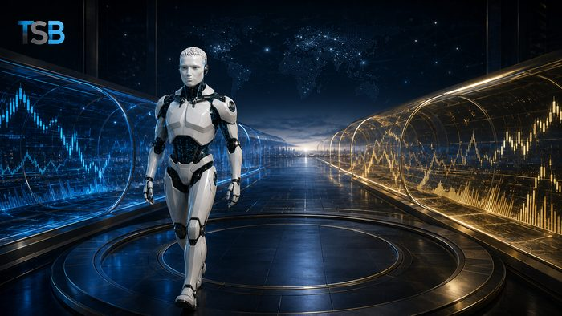
5. Backtesting și Testare pe Date Nevăzute
Strategia este verificată pe date istorice, apoi pe date noi
- Backtestingul evaluează numărul tranzacțiilor, rata de câștig, câștigul și pierderea medie, profit factor, expectancy, drawdown-ul maxim și seriile de pierderi — incluzând spread, comisioane, slippage și swap.
- Testarea pe date nevăzute presupune date separate pentru construirea sistemului, date separate pentru verificare, testare pe cont demo și testare cu volum redus.
- Dacă sistemul funcționează doar pe datele pe care a fost construit, există un risc mare de supraoptimizare.
Exemple: Profit factor · expectancy · date nevăzute · cont demo
Impact: Rezultatele istorice nu garantează performanțe viitoare — testarea corectă reduce, dar nu elimină, incertitudinea.
6. Colaborarea Om–AI
AI nu trebuie să primească autoritate nelimitată asupra capitalului
- Omul înțelege contextul general, evaluează evenimente neobișnuite, verifică sursele, definește riscul acceptabil, oprește sistemul în situații speciale și își asumă responsabilitatea.
- AI procesează rapid cantități mari de date, aplică reguli consecvent, monitorizează mai multe active, calculează volumul și expunerea și nu este influențată de emoții.
- Cele mai bune rezultate apar când AI oferă analiză și automatizare, iar omul păstrează controlul final și limitele de risc.
Exemple: Context și responsabilitate umană · viteză și consecvență AI
Impact: AI fără reguli, limite și monitorizare umană devine un risc, nu un avantaj.
7. Execuția, Monitorizarea și Jurnalul Algoritmului
După deschiderea poziției, sistemul trebuie urmărit activ
- Se urmăresc confirmarea executării, slippage-ul, comisioanele, funcționarea Stop Loss-ului, conexiunea cu brokerul și modificarea condițiilor pieței.
- Jurnalul algoritmului trebuie să înregistreze datele analizate, versiunea strategiei, condițiile detectate, motivul semnalului sau al respingerii lui, riscul calculat, ordinul trimis, prețul solicitat și executat, slippage-ul, erorile și rezultatul final.
- Fără un jurnal tehnic nu poate fi determinat dacă o problemă provine din strategie, date, execuție sau infrastructură.
Exemple: Slippage · conexiune broker · jurnal tehnic complet
Impact: Monitorizarea și jurnalul transformă un sistem opac într-unul verificabil și de încredere.
Avantajele Algoritmilor și AI
Un sistem bine construit oferă beneficii clare față de execuția manuală — dar fiecare avantaj depinde de calitatea implementării.
1. Viteză de procesare
2. Consecvență în aplicarea regulilor
3. Lipsa fricii, lăcomiei și FOMO
4. Monitorizare continuă a pieței
5. Testare pe date istorice
Limitele și Riscurile AI
- AI poate greși: interpretează greșit o știre, folosește informații incomplete sau confundă corelația cu relația cauzală
- Supraoptimizarea: strategia ajustată excesiv pentru trecut arată excelent în backtesting, dar poate eșua pe piața reală
- Schimbarea condițiilor pieței: un sistem conceput pentru o anumită perioadă poate deveni nepotrivit când piața trece de la trend la consolidare sau de la volatilitate redusă la una ridicată
- Riscuri tehnice: pierderea conexiunii, date întârziate, server indisponibil, ordine duplicate sau erori în cod
AI trebuie privită ca un instrument pentru analiză și disciplină, nu ca un înlocuitor perfect al traderului. Rezultatele importante trebuie verificate în sursele originale.
Checklist Înainte de Utilizarea unui Sistem Automat
- ☐ Înțeleg regulile sistemului?
- ☐ Strategia a fost testată pe un eșantion suficient?
- ☐ Au fost incluse costurile reale?
- ☐ Există testare pe date nevăzute?
- ☐ Sistemul a fost verificat pe cont demo?
- ☐ Există limite de risc?
- ☐ Există protecție împotriva ordinelor duplicate?
- ☐ Sistemul se oprește dacă datele sunt greșite?
- ☐ Pot opri manual algoritmul?
- ☐ Fiecare decizie este înregistrată?
- ☐ Știu în ce condiții sistemul nu funcționează bine?
- ☐ Rezultatele AI sunt verificate în surse originale?
Reguli Practice TSB
- ☐ AI nu garantează profitul
- ☐ Datele importante trebuie verificate
- ☐ Niciun semnal nu trebuie executat fără controlul riscului
- ☐ Un sistem trebuie să poată refuza tranzacția
- ☐ Backtestingul trebuie să includă costurile reale
- ☐ Datele de testare trebuie separate de cele de optimizare
- ☐ Algoritmul trebuie monitorizat permanent
- ☐ Orice sistem trebuie să aibă un mecanism de oprire
- ☐ Modificările strategiei trebuie înregistrate
- ☐ Responsabilitatea finală aparține persoanei care utilizează sistemul
Mini-test
- Care este diferența dintre automatizare și AI?
- De ce este importantă calitatea datelor?
- Ce reprezintă supraoptimizarea?
- Ce este testarea pe date nevăzute?
- AI poate elimina riscul tranzacționării?
- Ce rol are mecanismul Kill Switch?
- De ce trebuie păstrat jurnalul algoritmului?
Răspunsuri: automatizarea execută acțiuni stabilite, iar AI poate interpreta modele complexe · datele incorecte produc concluzii incorecte · adaptarea excesivă a strategiei la trecut · verificarea pe date care nu au fost folosite la construirea modelului · nu · oprește sistemul în condiții periculoase sau anormale · permite identificarea problemelor de strategie, date, execuție sau infrastructură.
Materialul are scop exclusiv educațional și informativ. Nu reprezintă consultanță financiară, recomandare de investiții sau promisiune de performanță. Algoritmii și inteligența artificială pot produce pierderi, iar tranzacționarea cu efect de levier implică un risc ridicat.
🛡️ Lecție Esențială — Protejează-ți Capitalul
Alegerea Brokerului și Protecția Împotriva Fraudelor — Lecția 8
Alegerea brokerului este o decizie de securitate, nu doar o comparație între spreaduri și platforme. Un site modern și recenzii pozitive nu demonstrează că firma este autorizată sau că banii tăi sunt protejați.
Ce trebuie verificat înainte de a depune bani
Identitatea juridică a firmei, autoritatea care o reglementează, permisiunile exacte, entitatea cu care semnezi contractul, țara în care sunt păstrați banii, protecțiile aplicabile contului, regulile de retragere și costurile reale de execuție. Reglementarea reduce anumite riscuri, dar nu elimină riscul de piață și nu garantează recuperarea tuturor banilor.
1. Verificarea Identității și Reglementării
Brandul comercial și compania juridică pot avea denumiri diferite
- Trebuie identificate: denumirea juridică completă, numărul companiei, sediul social, numărul de autorizare, autoritatea de reglementare, entitatea din contract și țara în care este deschis contul.
- Pentru un client din Regatul Unit, verificarea se face direct prin FCA Firm Checker — nu printr-un link trimis de reprezentantul brokerului. Compară denumirea, adresa site-ului, numărul de telefon și adresa de e-mail cu datele din registru.
- O firmă poate fi autorizată pentru o activitate, dar fără permisiune pentru CFD-uri, Forex sau consultanță financiară. Un agent nu devine consultant autorizat doar pentru că oferă „semnale”.
Exemple: FCA Firm Checker · număr de autorizare · permisiuni exacte
Impact: Protecția este determinată de entitatea contractantă, nu de brandul afișat pe site.
2. Firmele-Clonă
O firmă-clonă copiază identitatea unei companii autorizate
- Fraudatorii copiază numele, adresa, numărul de autorizare, logoul și documentele unei firme reale, apoi modifică domeniul site-ului, telefonul, e-mailul și contul bancar.
- Dacă ești contactat pe neașteptate, răspunde folosind exclusiv datele din registrul oficial, nu informațiile primite în mesaj.
- Absența unei firme din lista de avertismente FCA nu demonstrează că este sigură — poate fi o firmă nouă, neraportată încă.
Exemple: Nume identic · domeniu diferit · telefon schimbat
Impact: O diferență de o singură literă în domeniu sau e-mail poate indica o clonă.
3. Protecția Banilor Clienților
Segregarea fondurilor reduce riscul, dar nu îl elimină
- Întreabă în scris în ce bancă sunt păstrați banii, dacă sunt separați de fondurile firmei și ce se întâmplă în caz de insolvență.
- În Regatul Unit, FSCS poate acoperi până la £85.000 per persoană eligibilă, per firmă, pentru investiții — dar protecția depinde de firmă, produs și natura solicitării. Nu compensează pierderile normale de piață.
- Un sold la broker nu este automat un depozit bancar protejat. Dacă apare un litigiu cu o firmă reglementată, poți contacta Financial Ombudsman Service după o reclamație oficială la firmă.
Exemple: Segregarea fondurilor · FSCS până la £85.000 · Ombudsman
Impact: Firmele neautorizate pot lăsa clientul fără acces la FSCS sau Ombudsman.
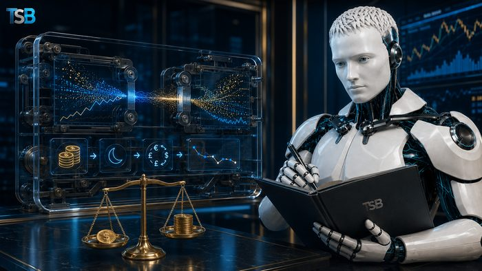
4. Costurile Reale și Calitatea Execuției
Un broker ieftin în reclamă poate deveni scump în condiții reale
- Costul total include spread, comision, swap, slippage și conversie valutară — nu doar spreadul minim afișat.
- Verifică spreadul mediu (nu doar „de la 0”), spreadul în timpul știrilor, taxele de inactivitate și retragere, și diferența dintre prețul solicitat și executat.
- Testează brokerul pe cont demo, apoi cu sumă mică: măsoară timpul de execuție, slippage-ul, requote-urile și stabilitatea platformei. Stop Loss-ul nu garantează executarea la prețul exact solicitat.
Exemple: Spread mediu · comision · swap · slippage
Impact: Costurile reale se văd doar în execuție, nu în materialele de marketing.
5. Retragerea de Test
O retragere mică, făcută devreme, valorează mai mult decât orice recenzie
- Depune o sumă mică, finalizează verificarea identității, deschide și închide câteva poziții mici, apoi solicită retragerea unei părți din bani.
- Notează timpul de procesare, eventualele taxe și confirmă că banii revin într-un cont pe numele tău. Păstrează confirmările și extrasele.
- O retragere mică reușită nu garantează toate retragerile viitoare — dar una blocată fără explicație este un avertisment major.
Exemple: Sumă mică · timp de procesare · cont pe numele tău
Impact: Testarea retragerii înainte de a crește depozitul este cea mai simplă protecție practică.
6. Semnele Fraudei și Accesul la Distanță
Profitul garantat și presiunea pentru depunere sunt semnale clare
- Evită firma dacă apare: profit garantat, „zero risc”, presiune pentru depunere imediată, bonus condiționat de volum sau solicitarea unei „taxe” pentru retragere.
- Nu instala aplicații de control la distanță și nu comunica parola, codul SMS, PIN-ul, seed phrase sau datele complete ale cardului. Un angajat legitim nu are nevoie de acestea.
- Plata către un cont personal, către o companie fără legătură cu brokerul sau exclusiv în criptomonede este un semnal de alarmă major.
Exemple: Profit garantat · control la distanță · plată către persoană fizică
Impact: Recunoașterea din timp a acestor semnale poate preveni pierderea completă a capitalului.
7. Dacă Suspectezi o Fraudă
Acțiunea rapidă limitează pierderile suplimentare
- Oprește toate plățile, contactează imediat banca, cere blocarea transferurilor viitoare și schimbă parolele de pe un dispozitiv sigur.
- Salvează toate dovezile: extrase bancare, confirmări, e-mailuri, mesaje, capturi ale site-ului și numele persoanelor implicate. Nu șterge conversațiile.
- Raportează firma către FCA, iar frauda către Report Fraud (Anglia, Țara Galilor, Irlanda de Nord) sau Police Scotland prin 101. Nu plăti bani suplimentari pentru „recuperarea” fondurilor.
Exemple: Oprește plățile · păstrează dovezile · raportează oficial
Impact: O frauda de recuperare cere din nou bani — nu plăti niciodată în avans pentru recuperare.
Protecții, Statut și Riscuri Suplimentare
Protecțiile Contului Retail CFD
Pentru clienții retail din Regatul Unit, regulile FCA includ levier limitat între 30:1 și 2:1, închiderea automată a pozițiilor sub pragul de marjă, protecție împotriva soldului negativ și interzicerea bonusurilor care încurajează tranzacționarea. Protecția împotriva soldului negativ limitează pierderea la fondurile din cont, dar nu o elimină.
Pericolul Statutului de Client Profesionist
Unii brokeri încearcă să convingă clientul să solicite statut profesional pentru levier mai mare, dar acest statut elimină anumite protecții retail. Semnal de alarmă: brokerul completează testul în locul tău, recomandă declararea unei experiențe false sau mută contul către o entitate offshore.
Frauda de Recuperare
După o fraudă inițială, victima poate fi contactată de o presupusă firmă de recuperare care cere o taxă în avans. Escrocii pot deține deja numele victimei și suma pierdută — acest lucru nu demonstrează legitimitatea serviciului. Nu plăti niciodată în avans pentru recuperare.
Resurse Oficiale (Regatul Unit)
Verifică întotdeauna informația direct la sursă, nu prin linkurile primite de la un reprezentant al brokerului.
Semnale de Alarmă
- Profit garantat sau randament fix din Forex ori CFD, prezentat drept „zero risc”
- Presiune pentru depunere imediată sau apeluri repetate de la numere diferite
- Solicitarea instalării unei aplicații de control la distanță sau a parolei/codului SMS
- Plata către un cont personal, o companie fără legătură cu brokerul sau exclusiv în criptomonede
- Refuzul retragerii până la plata unei „taxe” sau a unui „depozit de verificare”
- Mutarea contului către o jurisdicție offshore fără explicație sau levier extrem oferit unui client retail
Dacă observi oricare dintre aceste semnale, oprește transferurile și verifică firma independent, folosind exclusiv datele din registrul oficial.
Identitate și Reglementare
- ☐ Cunosc denumirea juridică exactă
- ☐ Am verificat personal firma în registrul oficial
- ☐ Domeniul, telefonul și e-mailul corespund registrului
- ☐ Am verificat permisiunile pentru serviciul oferit
- ☐ Am verificat lista de avertismente
- ☐ Știu cu ce entitate semnez contractul
- ☐ Știu în ce jurisdicție va fi deschis contul
Protecția Banilor
- ☐ Știu unde sunt păstrați banii
- ☐ Am citit politica privind banii clienților
- ☐ Am verificat dacă și în ce condiții se aplică FSCS
- ☐ Știu dacă am acces la Financial Ombudsman
- ☐ Contul de plată aparține entității verificate
- ☐ Beneficiarul transferului corespunde companiei juridice
Costuri și Execuție
- ☐ Cunosc spreadul mediu
- ☐ Cunosc comisionul și swapul
- ☐ Am citit politica de execuție
- ☐ Am testat Stop Loss și ordinele pending
- ☐ Am efectuat o retragere de test
- ☐ Am păstrat toate documentele și extrasele
Protecție Împotriva Fraudei
- ☐ Nu mi s-a promis profit garantat
- ☐ Nu sunt presat să depun urgent
- ☐ Nu am instalat aplicații de control la distanță
- ☐ Nu am declarat informații false pentru statut profesional
- ☐ Nu transfer bani către persoane fizice
- ☐ Nu plătesc taxe suplimentare pentru „deblocarea” retragerii
Reguli TSB
- ☐ Verifică brokerul în registrul autorității, nu prin linkul primit
- ☐ Verifică entitatea, domeniul și datele de contact
- ☐ Confirmă permisiunile exacte
- ☐ Nu confunda reglementarea cu garantarea profitului
- ☐ Nu presupune automat că toate fondurile sunt protejate de FSCS
- ☐ Nu accepta statut profesional doar pentru levier mai mare
- ☐ Testează retragerea înainte de creșterea depozitului
- ☐ Nu permite accesul la distanță la dispozitivele tale
- ☐ Nu plăti bani suplimentari pentru recuperarea sau deblocarea fondurilor
- ☐ Păstrează toate dovezile și acționează imediat când apare o suspiciune
Mini-test
- De ce nu este suficient să verifici doar numele brandului brokerului?
- Ce este o firmă-clonă?
- Ce acoperă (și ce nu acoperă) FSCS?
- De ce este utilă o retragere de test?
- Ce riscă un client care solicită statut de client profesionist?
- Ce faci imediat dacă suspectezi o fraudă?
- De ce nu trebuie plătită o „firmă de recuperare” în avans?
Răspunsuri: brandul comercial poate diferi de entitatea juridică reglementată · o firmă care copiază identitatea unei companii autorizate, schimbând contactele reale · poate acoperi până la £85.000 pentru investiții, dar nu pierderile normale de piață · confirmă timpul de procesare și că banii revin pe numele tău, înainte de a crește depozitul · pierde protecțiile retail precum limitele de levier și protecția soldului negativ · oprești plățile, contactezi banca, păstrezi dovezile și raportezi oficial · pentru că este adesea o fraudă de recuperare care cere bani suplimentari fără să returneze fondurile.
Material educațional bazat pe informații oficiale disponibile la 16 iulie 2026. Regulile și limitele se pot modifica. Verifică întotdeauna informația direct la autoritatea competentă. Materialul nu reprezintă consultanță juridică sau financiară și nu recomandă un broker anume.
🎓 Lecție educativă
Cine formează Piața Forex?
Piața Forex este cea mai mare piață financiară din lume, cu un volum zilnic de peste 7 trilioane USD. Mișcările valutelor nu sunt întâmplătoare. Ele sunt influențate de patru mari forțe.
Cei 4 actori principali ai pieței Forex
1. Băncile Centrale
Arhitecții economiei mondiale
- Controlează politica monetară.
- Decid dobânda, lichiditatea, inflația și stabilitatea monedei.
Exemple: FED · Bank of England · European Central Bank · Bank of Japan
Impact: Dacă o bancă centrală mărește dobânda, moneda acelei țări devine mai atractivă și se apreciază.
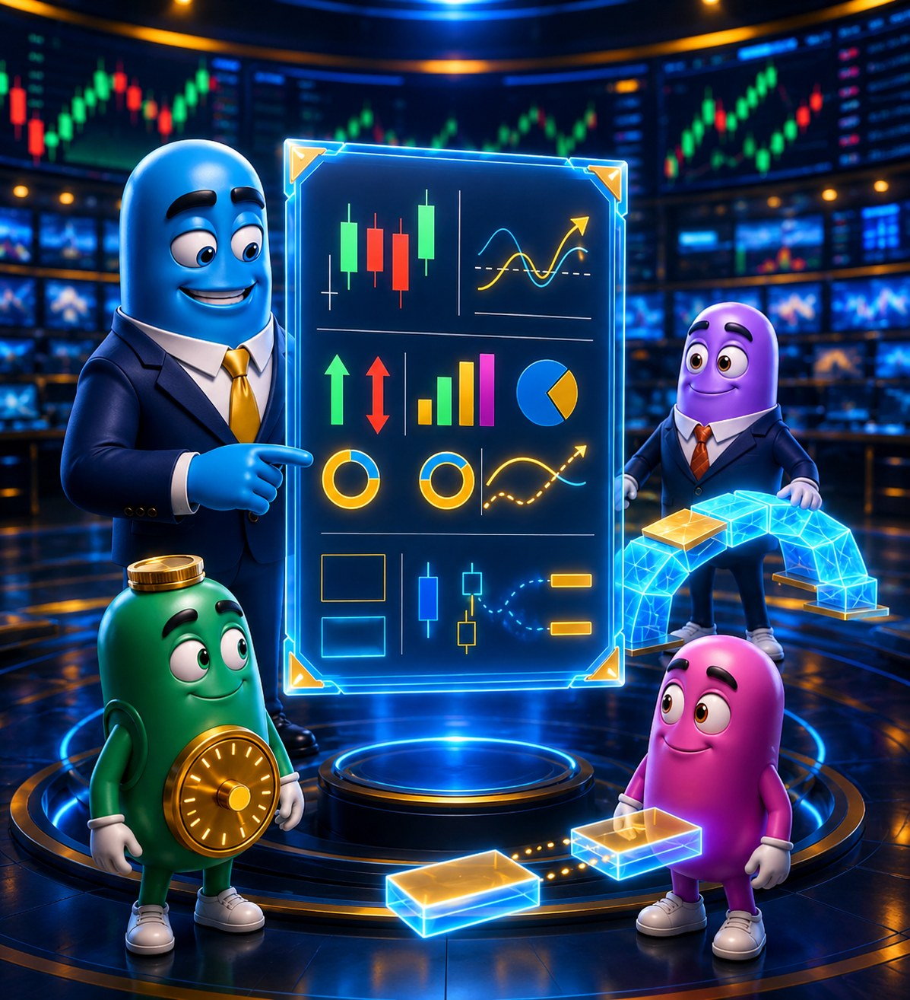
2. Băncile Investiționale
Motorul lichidității
- Execută ordine de miliarde de dolari.
- Oferă lichiditate și creează piețe.
- Tranzacționează pentru clienți și instituții mari.
Exemple: Goldman Sachs · JPMorgan Chase & Co. · Citi · UBS
Impact: Ordinele mari executate de bănci pot mișca puternic piața și pot crea noi zone de lichiditate.
3. Fondurile de Investiții
Capitalul care mută piețele
- Administrează miliarde sau trilioane de dolari.
- Scopul: protejarea și creșterea capitalului.
- Cumpără și vând în funcție de strategie și perspectivă.
Exemple: BlackRock · Vanguard · Fidelity · Bridgewater
Impact: Fluxurile mari de capital pot crește sau scădea puternic cererea și oferta pe piață.
4. Evenimente Geopolitice
Factorul imprevizibil
- Evenimentele globale schimbă sentimentul pieței.
- Războaie, sancțiuni, alegeri, crize energetice, pandemii, acorduri comerciale și altele.
Exemple: Războaie · Alegeri · Crize energetice · Acorduri
Impact: Investitorii caută siguranță sau oportunități, iar piețele reacționează rapid și puternic.
Cum circulă informația în piață?
Informația pornește de la evenimentele economice și deciziile globale, este procesată de marile instituții și ajunge până la traderii retail. Înțelegerea acestui flux te ajută să vezi imaginea completă.
Evenimente Economice
Băncile Centrale
Băncile Investiționale
Fondurile de Investiții
Brokerii / Instituțiile
Traderii Retail
Filosofia Treiding Satellite Broadcast
Un trader de succes nu urmărește doar graficele. El înțelege de ce se mișcă piața. La Treiding Satellite Broadcast analizăm permanent cele 4 forțe care influențează piața Forex și distribuim informația către membrii noștri, astfel încât tu să iei decizii informate și să fii mereu cu un pas înainte.
📈 Analiză profundă
🕐 Informație în timp real
🌐 Viziune globală
🎯 Decizii inteligente
Trading implică risc. Performanțele anterioare nu garantează rezultatele viitoare. Informațiile de pe acest site au scop educativ și nu reprezintă sfat financiar.
10 Forțe Reale pe Piața Forex
Cine mișcă piața valutară și de ce contează
1
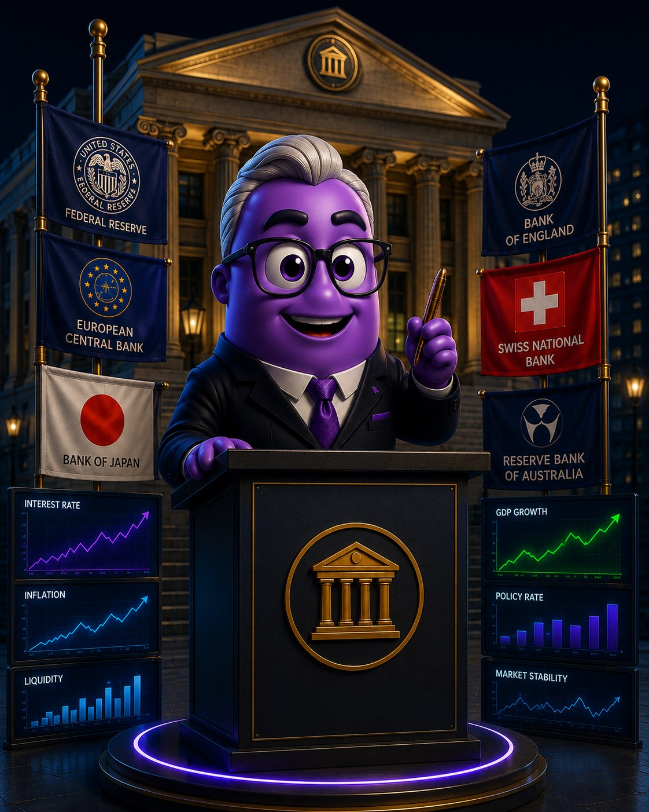
Băncile Centrale
Controlează dobânzile, lichiditatea și economia.
2
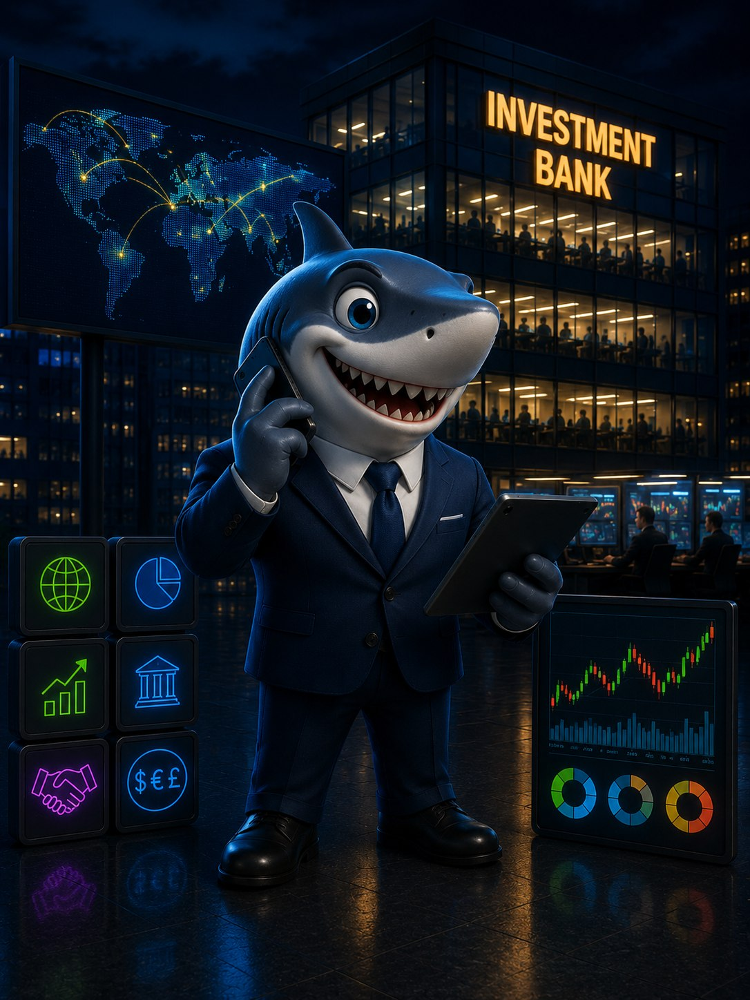
Băncile de Investiții
Execută ordine mari și oferă lichiditate pieței.
3
Fondurile de Investiții
Mută miliarde de dolari între valute, aur, acțiuni și obligațiuni.
4
Market Makerii
Asigură cumpărători și vânzători și mențin piața în mișcare.
5
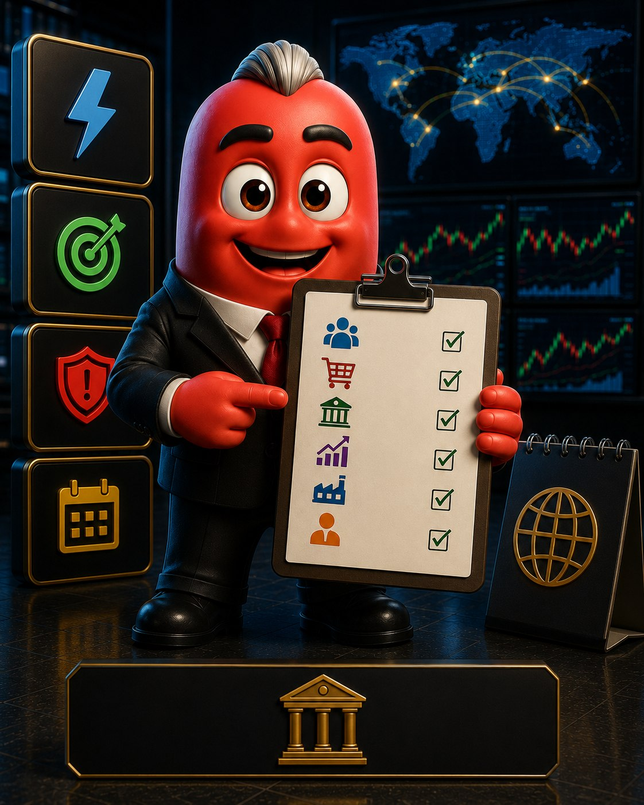
Calendarul Economic
Știrile importante care pot mări volatilitatea.
6
Evenimentele Geopolitice
Războaie, alegeri, sancțiuni și crize care schimbă sentimentul pieței.
7
Lichiditatea
Combustibilul pieței. Fără lichiditate, piața nu se mișcă.
8
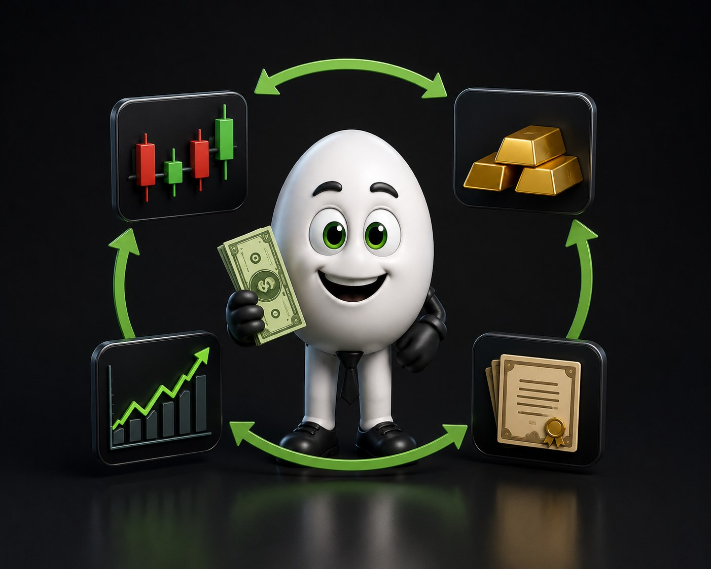
Fluxul Capitalului
Banii se mută mereu între active. Înțelegerea fluxului = avantaj.
9
Traderii Retail
Milioane de traderi individuali care contribuie la lichiditate.
10
Algoritmii (HFT & AI)
Execută tranzacții în milisecunde și procesează volume uriașe de date.
Înțelege forțele. Urmărește piața. Trading inteligent.
Sesiunile de Tranzacționare Forex
Piața Forex este deschisă 24 de ore din 24, 5 zile pe săptămână — lichiditatea circulă neîntrerupt între patru mari centre financiare.
1. Sesiunea Sydney
Prima piață care se deschide
- Deschide săptămâna de tranzacționare, duminică seara ora Europei.
- Volum de tranzacționare redus comparativ cu celelalte sesiuni.
- Se suprapune cu prima parte a sesiunii Tokyo.
Exemple: Ore active: 22:00–07:00 UTC · AUD/USD · NZD/USD · AUD/JPY · AUD/NZD
Impact: Mișcările sunt de obicei line, dar pot anticipa tonul general al săptămânii pentru perechile cu AUD și NZD.
2. Sesiunea Tokyo
Piața asiatică
- Lichiditate moderată, mișcări adesea în interval (range-bound).
- Perechile cu JPY sunt cele mai active în această sesiune.
- Se suprapune parțial cu Sydney și, spre final, cu Londra.
Exemple: Ore active: 00:00–09:00 UTC · USD/JPY · EUR/JPY · GBP/JPY · AUD/JPY
Impact: Deciziile Băncii Japoniei (BoJ) și datele economice din China pot mișca puternic piața asiatică.
3. Sesiunea Londra
Cea mai lichidă sesiune
- Cel mai mare volum zilnic de tranzacționare din toate cele patru sesiuni.
- Stabilește direcția principală a zilei pentru majoritatea perechilor majore.
- Se suprapune câteva ore cu sesiunea New York, spre finalul ei.
Exemple: Ore active: 08:00–17:00 UTC · EUR/USD · GBP/USD · EUR/GBP · XAU/USD
Impact: Cele mai mari mișcări de preț ale zilei apar frecvent chiar la deschiderea sesiunii Londra.
4. Sesiunea New York
Suprapunerea cu volatilitate maximă
- Se suprapune 4–5 ore cu sesiunea Londra — cea mai volatilă perioadă a zilei.
- Datele economice americane majore (NFP, CPI, decizii Fed) sunt publicate în această sesiune.
- Perechile cu USD domină activitatea de tranzacționare.
Exemple: Ore active: 13:00–22:00 UTC · EUR/USD · GBP/USD · USD/CAD · XAU/USD
Impact: Suprapunerea Londra–New York (13:00–17:00 UTC) oferă de regulă cele mai bune oportunități de tranzacționare din întreaga zi.
Ciclul celor 24 de ore
Cele patru sesiuni se succed non-stop, astfel încât piața Forex nu se închide niciodată în timpul săptămânii lucrătoare. Cunoașterea programului te ajută să alegi momentul potrivit pentru fiecare pereche valutară.
Sydney 22:00 UTC
Tokyo 00:00 UTC
Londra 08:00 UTC
New York 13:00 UTC
Orele indicate sunt aproximative (UTC, fără ajustare pentru ora de vară) și pot varia ușor în funcție de broker. Trading implică risc. Informațiile au scop educativ și nu reprezintă sfat financiar.
Managementul Riscului — Protejează-ți Capitalul
Un trader profitabil nu este cel care câștigă mereu, ci cel care își protejează capitalul atunci când greșește. Patru reguli simple fac diferența pe termen lung.
1. Protejarea Capitalului
Regula de aur: nu risca tot ce ai
- Riscă doar un procent mic din capitalul total pe fiecare tranzacție, de obicei 1-2%.
- Mărimea poziției se calculează în funcție de distanța până la Stop Loss, nu invers.
- Protejarea capitalului îți permite să rămâi în joc chiar și după o serie de pierderi.
Exemple: Cont de 10.000 USD · Risc 1% = 100 USD per tranzacție
Impact: Chiar și 10 tranzacții pierdute la rând nu îți distrug contul dacă respecți regula procentului fix.
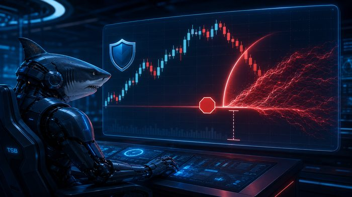
2. Stop Loss Obligatoriu
Limita care oprește pierderea
- Fiecare tranzacție trebuie să aibă un Stop Loss stabilit înainte de intrare, nu după.
- Stop Loss-ul se plasează pe baza structurii tehnice (suport/rezistență, ATR), nu la întâmplare.
- Nu muta niciodată Stop Loss-ul mai departe ca să „dai șansă” unei tranzacții pierzătoare.
Exemple: SL calculat cu ATR · SL sub/peste ultimul swing structural
Impact: Un Stop Loss disciplinat transformă o pierdere potențial devastatoare într-una controlată și acceptabilă.
3. Raportul Risc/Recompensă
Câștigă mai mult decât riști
- Un raport Risc/Recompensă de minim 1:2 înseamnă că potențialul câștig e dublu față de riscul asumat.
- Cu un R:R bun, poți fi profitabil chiar dacă pierzi mai multe tranzacții decât câștigi.
- Evaluează raportul înainte de a intra în tranzacție, nu după.
Exemple: Risc 50 pips → Țintă minim 100 pips (R:R 1:2)
Impact: Cu R:R 1:2 și doar 40% tranzacții câștigătoare, contul tău tot crește pe termen lung.
4. Disciplina și Checklist-ul
Planul bate impulsul
- Fiecare tranzacție trece printr-un checklist fix înainte de execuție: setup, SL, TP, context macro.
- Disciplina previne deciziile emoționale luate din frică sau lăcomie.
- Un jurnal de tranzacționare te ajută să identifici ce funcționează și ce nu.
Exemple: Setup confirmat ✓ · SL plasat ✓ · R:R ≥ 1:2 ✓ · Fără știri majore ✓
Impact: Traderii disciplinați, care urmează un plan scris, au șanse semnificativ mai mari de succes pe termen lung.
Regula de aur, în 4 pași
Cele patru principii funcționează împreună, ca un sistem — nu izolat. Sări peste unul singur și tot sistemul de protecție a capitalului se prăbușește.
1. Riscă 1-2%
2. Setează SL
3. Verifică R:R ≥ 1:2
4. Bifează checklist-ul
Managementul riscului reduce pierderile, dar nu le elimină complet. Trading implică risc, inclusiv pierderea parțială sau totală a capitalului investit. Informațiile au scop educativ și nu reprezintă sfat financiar.
Cine Reglementează Piețele Financiare?
Nu există un singur reglementator mondial al pieței Forex — fiecare țară are propriile autorități, iar verificarea directă a licenței îți poate salva capitalul de la brokeri neautorizați.
De ce contează asta
Un reglementator stabilește reguli pentru instituțiile financiare, autorizează și supraveghează firme, verifică modul în care sunt tratați clienții, investighează abuzurile și poate aplica amenzi sau retrage autorizații. Un broker poate avea însă mai multe entități legale, fiecare cu un nivel diferit de protecție pentru clienți — de aceea licența trebuie verificată direct, nu doar presupusă după un logo.
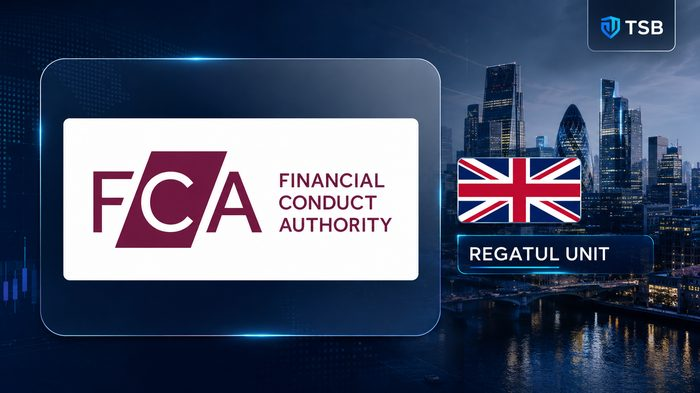
1. FCA — Regatul Unit
Financial Conduct Authority
- Reglementează conduita firmelor și piețelor financiare din Regatul Unit — principalul reglementator de verificat la alegerea unui broker Forex sau CFD.
- Urmărește protecția consumatorilor, integritatea piețelor, concurența loială și respectarea regulilor privind banii clienților.
- Limitează efectul de levier pentru clienții retail și impune comunicare clară și corectă către clienți.
Exemple: Verificare în FCA Firm Checker — denumire juridică, nr. de referință, domeniul web
Impact: Un broker care afirmă doar „FCA regulated” nu trebuie crezut automat — verifică direct în registrul FCA.
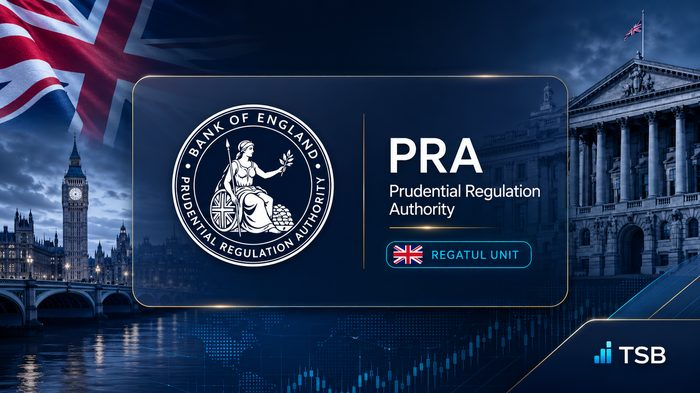
2. PRA — Regatul Unit
Prudential Regulation Authority
- Face parte din Bank of England și supraveghează băncile, societățile de credit, asigurătorii și marile firme de investiții.
- Urmărește stabilitatea și siguranța financiară a instituțiilor, nu conduita zilnică față de clienți.
- FCA se ocupă de conduită și protecția clientului; PRA se ocupă de soliditatea financiară a firmelor mari.
Exemple: Relevantă mai ales pentru bănci și instituții mari, nu pentru brokeri retail mici
Impact: Cele două autorități britanice lucrează în paralel: conduită (FCA) și soliditate financiară (PRA).
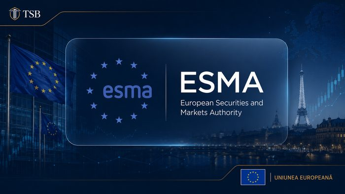
3. ESMA — Uniunea Europeană
European Securities and Markets Authority
- Dezvoltă standarde comune pentru piețele de capital din UE și promovează supravegherea consecventă între state.
- Protejează investitorii și monitorizează riscurile piețelor la nivel european.
- În majoritatea cazurilor, brokerul este autorizat direct de autoritatea națională (ex. CySEC în Cipru), nu de ESMA.
Exemple: Cadru comun UE, aplicat local de fiecare autoritate națională
Impact: ESMA stabilește regulile-cadru; verificarea reală a brokerului se face la autoritatea națională.
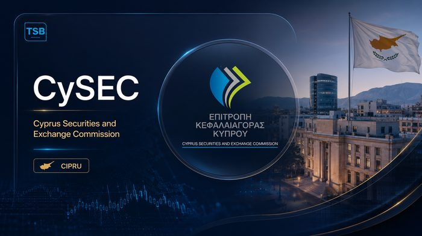
4. CySEC — Cipru
Cyprus Securities and Exchange Commission
- Autorizează și supraveghează firmele de investiții stabilite în Cipru — numeroși brokeri Forex/CFD europeni funcționează prin entități cipriote.
- Verifică conduita firmelor, integritatea pieței, protecția investitorilor și respectarea cerințelor europene.
- Autorizația CySEC nu este echivalentă cu FCA — după Brexit, protecția depinde de entitatea juridică prin care e deschis contul.
Exemple: Mulți brokeri au atât entitate FCA, cât și entitate CySEC — protecțiile diferă
Impact: Verifică mereu prin ce entitate juridică exactă îți deschizi contul, nu doar marca brokerului.
5. SEC — Statele Unite
Securities and Exchange Commission
- Reglementează piața americană a valorilor mobiliare: acțiuni, obligațiuni, fonduri, burse de valori și brokeri de titluri.
- Misiunea sa: protejarea investitorilor, piețe corecte și eficiente, facilitarea formării capitalului.
- SEC nu este principalul reglementator american pentru tranzacționarea retail Forex.
Exemple: Relevant pentru acțiuni și titluri americane, nu pentru Forex retail
Impact: Pentru Forex în SUA, verificarea se face la CFTC, nu la SEC.
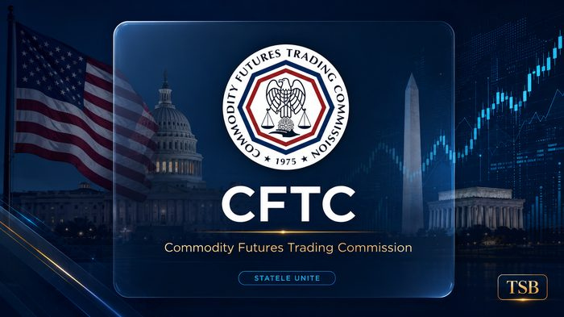
6. CFTC — Statele Unite
Commodity Futures Trading Commission
- Supraveghează piețele americane de derivate: futures, opțiuni pe futures, swap-uri și anumite activități Forex retail.
- Misiune: susținerea integrității și rezilienței piețelor americane de derivate.
- Pentru Forex și derivate în SUA, CFTC este una dintre cele mai importante autorități de verificat.
Exemple: Intermediarii pieței de derivate din SUA sunt supravegheați de CFTC
Impact: Un broker Forex american serios va fi înregistrat la CFTC — verifică înainte de a deschide cont.
7. FINRA — Statele Unite
Financial Industry Regulatory Authority
- Organizație de autoreglementare (nu agenție guvernamentală precum SEC), autorizată și supravegheată în cadrul legal american.
- Supraveghează firmele broker-dealer membre, verifică personalul înregistrat și aplică reguli membrilor.
- Oferă serviciul public BrokerCheck pentru verificarea brokerilor americani de valori mobiliare.
Exemple: Verificare prin FINRA BrokerCheck — istoric, licențe și eventuale sancțiuni
Impact: FINRA BrokerCheck e un instrument gratuit esențial înainte de a lucra cu un broker american.
8. ASIC — Australia
Australian Securities and Investments Commission
- Autoritatea australiană pentru piețe financiare, servicii financiare, creditare a consumatorilor și obligații corporative.
- Autorizează și supraveghează numeroși brokeri Forex și CFD care operează prin entități australiene.
- Ca și în UK sau Cipru, verifică entitatea juridică exactă prin care brokerul operează în Australia.
Exemple: Registru public ASIC pentru verificarea licenței și a firmei
Impact: O entitate autorizată ASIC oferă un cadru de protecție diferit față de o entitate offshore neregulată.
Cum verificăm corect un broker, în 7 pași
Nu ne uităm doar la logo-ul afișat pe site. Parcurgem pașii de mai jos înainte de a deschide orice cont — un broker poate avea mai multe entități, fiecare cu protecții diferite.
1. Denumire juridică
2. Nr. licenței
3. Registrul oficial
4. Domeniu & contact
5. Servicii permise
6. Avertismente
7. Entitatea contractuală
Ce NU garantează reglementarea
- Nu garantează că traderul va obține profit
- Nu garantează că investiția nu poate pierde valoare
- Nu confirmă că orice produs e potrivit pentru client
- Nu garantează recuperarea automată a pierderilor sau execuția perfectă a fiecărui ordin
Concluzia TSB: un logo de reglementare nu este suficient. Licența, entitatea juridică și domeniul brokerului trebuie verificate direct în registrul oficial al autorității înainte de a deschide orice cont.
Informațiile despre reglementatori au scop educativ și pot suferi modificări. Verifică mereu direct pe site-ul oficial al autorității înainte de a lua o decizie. Trading implică risc și nu reprezintă sfat financiar.